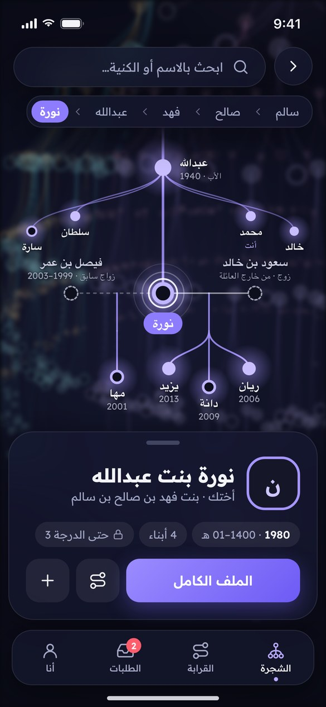

زوجات رجل، ولكل منهن أبناؤها؛ وابن زوجة من زواج سابق على خط متقطع

بنت لها زوج حالي وزوج سابق من خارج العائلة (بالاسم فقط)
كيف نوثّق نسبنا (الآباء والأمهات والزوجات والأبناء والصور) بحيث يبقى خاصًا، ويعتمده من تثق بهم العائلة، ويبقى بعدنا بزمن طويل.
على الجميع قراءة القسم 1 (نظرة عامة قصيرة، تشمل أين وصلنا). ويركّز المراجعون التقنيون على الأقسام 6–8 (الأمان والاسترداد والاستضافة). ويضم القسم 13 الأسئلة التي نحتاج رأيكم فيها أكثر من غيرها. وكل جزء موسوم، لتعرفوا ما هو موجود وما هو مطروح للنقاش:
مُنجَز في التطبيق ومُختبَر (ويبيّن القسم 1 ما يعمل منه على الموقع) · قيد البناء مُقرّر ويُبنى الآن · مُقرّر متفق عليه ولم يُبنَ بعد · مقترح مطروح للنقاش
بُني واختُبر في 21 نوفمبر 2026: نشر الشيفرة، دون العائلة (القسم 8، «الشيفرة المنشورة»). صارت شيفرة التطبيق واختباراته وهذه الوثيقة منشورة بترخيص GNU AGPL 3.0 (github.com/bodaay/family-tree)، فتستطيع عائلات أخرى تشغيل نسختها، ويستطيع أي أحد أن يقرأ ما يفعله التطبيق. ولا يخرج معها شيء من هذه العائلة: فالنسخة المنشورة تُكتب من مستودع العائلة الخاص ببرنامج يترك بيانات العائلة ومفاتيحها وموقعها، ويتوقف إن ظهر فيما سيخرج اسمٌ أو معرّفٌ أو عنوانٌ أو سرٌّ من أسرار العائلة. وصارت اختبارات المتصفح تعمل على عائلة مصطنعة من 800 شخص بدل نسخة من هذه العائلة. وصار خادم Node جاهزًا لتشغيل موقع عائلة بنفسها: فبدء عائلة يحتاج رمز الإنشاء هناك أيضًا، ويرسل ترويسات الأمان نفسها التي يرسلها Cloudflare. ويشرح دليل النشر (docs/deploy.md) النشر على Cloudflare وعلى خادم خاص. وكشفت العائلة المصطنعة ثلاثة أخطاء لم يُظهرها شكل هذه العائلة، وقد أُصلحت: الاسم الكامل الذي يُكتب لزوج من خارج العائلة صار يُسقط اسم العائلة إن كان كلمتين («آل مبارك») كما كان يُسقطه كلمة واحدة؛ والشجرة ثلاثية الأبعاد لم تعد تتعثر لحظةً بمن حُذف للتو؛ والاسم الطويل إلى جانب المفتاح وزره على الهاتف الضيق صار ينكسر إلى سطر ثانٍ بدل أن يخرج من صفّه.
family.json في الوقت الحاضر.family.json نسخة صريحة إلى أن يوجد نسخ احتياطي.شجرة العائلة تطبيق ويب خاص لتوثيق نسب العائلة (الآباء والأمهات والزوجات والأبناء والصور) عبر الأجيال. بُني أولًا لعائلتنا الكبيرة، وهو يعمل الآن. وصُمّم بحيث تستطيع عائلات أخرى لاحقًا أن تنضم إلى خدمة مستضافة أو تشغّل نسختها الخاصة، لكن ذلك مؤجَّل: عائلتنا أولًا.
كل سجل مشفّر على هواتف أفراد العائلة أنفسهم، ولا يستطيع من يستضيفه قراءته أبدًا. والتغييرات يقترحها الأفراد ويعتمدها حاملو المفاتيح (البلاتيني والذهبي والفضي) في الفرع المعني، كما تحسم العائلات مثل هذه الأمور أصلًا. وأثناء إعداد العائلة، يُدخل مشرف العائلة الشجرة، ويدعو الأفراد، ويسلّم المفاتيح. ويهدف التصميم إلى إبقاء الأرشيف حيًا لعقود دون أكثر من اسم نطاق (دومين)، ووسيلة دفع، وعدد قليل من أفراد العائلة لديهم بعض المعرفة التقنية.
family.json)عدة الأجهزة، والتجديد التلقائي، وحزمة الاسترداد مفتاحًا احتياطيًا، وتحقّق الكتابة، وإصلاحات المراجعة، وكل جديد الإصدار 1.7، وإصلاحات الإصدار 1.8، و«ربط أبناء» في الإصدار 1.9، وبتّ مشرف العائلة في الطلبات في الإصدار 1.10، وإعداد خصوصية النساء في الإصدار 1.11، والرجوع والتحديث في الإصدار 1.12، وإيقاف سؤال التكرار في الإصدار 1.13، وأسماء أبناء البنات واقتراح الأزواج في الإصدار 1.14، وحدود الطلبات في الإصدار 1.15، وشريط الحداد في الإصدار 1.16، وعرض الجيل في الإصدار 1.17، واعتماد حامل المفتاح طلبه في الإصدار 1.18، والاعتماد فور الإرسال في الإصدار 1.19، تعمل على الموقع منذ نشر 1 نوفمبر 2026، واستخراج المستوى على كل هاتف في الإصدار 1.20، وتسجيل الوفاة بطلب في الإصدار 1.21، والفتح دون اتصال في الإصدار 1.22، ونسخة السجل في الإصدار 1.23، والمحرّمات بالمصاهرة في الإصدار 1.24، ومفاتيح الأشخاص في الإصدار 1.26 (وأجرى مشرف العائلة الانتقال في اليوم نفسه)، وتحقّق الإصدار في الإصدار 1.27، وإصلاح الإصدار 1.28، وبقية الخصوصية والمفاتيح في الإصدار 1.29، منذ 2 نوفمبر، وتصدير الشجرة في الإصدار 1.30، والتصحيحات من أي فرد في الإصدار 1.31، والحذف طلبًا في الإصدار 1.32، منذ 3 نوفمبر، وكل طرق القرابة في الإصدار 1.33، والطريق عبر جد ينتمي إليه الآخر من جهة أخرى في الإصدار 1.34، منذ 6 نوفمبر، والرضاعة في الإصدار 1.36، منذ 16 نوفمبر؛ ويسري تحقّق الكتابة متى سجّل هاتف مشرف العائلة مفتاح الكتابة (القسم 8). لم يُختبر بعد على هواتف العائلة نفسها: أيّها يعطي قفل البصمة سرّ PRF، وكم يستغرق Argon2id على أقدمها (القسمان 7 و12).
لا أرقام هوية وطنية، ولا أرقام هواتف، ولا عناوين. سنة الميلاد فقط. والبيانات التي لا نجمعها لا يمكن أن تتسرّب.
كل البيانات تُشفَّر، ولا يُفك تشفيرها إلا على أجهزة الأفراد. واختراق الخادم لا يكشف شيئًا مقروءًا.
لا يستطيع شخص واحد، ولا هاتف، ولا مفتاح، ولا بريد إلكتروني، ولا مزوّد خدمة، أن يكشف الأرشيف أو يدمّره. لم يتحقق بعد: مفتاح العائلة المشترك ورابط المشرف اليوم نقطتان من هذا النوع (القسمان 4 و6).
ويب فقط، وصيغ مفتوحة، وأقل قدر من الأجزاء المتحركة، وأرشيف يستطيع أن يفتح نفسه حتى لو اختفى هذا المشروع.
بصمة الوجه بدل كلمات المرور، والاعتماد بلمسة واحدة، والعربية أولًا، وخط كبير، وإعداد بمساعدة قريب أصغر سنًا، وإمكانية توكيل قريب موثوق.
| الموضوع | القرار |
|---|---|
| المنصة | تطبيق ويب يناسب الجوال (PWA، أي تطبيق ويب تقدّمي) يُثبَّت على الشاشة الرئيسية. لا تطبيقات في متاجر التطبيقات، أبدًا. فالمتاجر تفرض تحديثات مستمرة وقد تحذف التطبيقات، أما الويب فيبقى يعمل لعقود. |
| الاستضافة | برنامج واحد على Cloudflare (Worker) يقدّم التطبيق وواجهة API صغيرة. ويعيش سجل كل عائلة في Durable Object خاص بها: مخزن صغير بقاعدة بيانات SQLite خاصة، لا يحمل إلا قيودًا مشفّرة. والشيفرة نفسها تُستضاف ذاتيًا على Node. |
| نطاق المشروع | عام لأي عائلة. عائلتنا هي الأولى، وقد بدأت فعلًا. أما خدمة العائلات الأخرى فمؤجَّلة. |
| نموذج العائلة | شبكة علاقات لا شجرة بسيطة: زواج الأقارب، وتعدد الزوجات، ووجود المرأة في أكثر من دور، كلها أمور عادية. كل ابن مرتبط بأمه بعينها، وتُسجَّل الرضاعة، ولكل شخص اسم يُحفظ كما أُدخل تمامًا، وأي عدد من الأسماء البديلة. |
| الحوكمة | مفاتيح القيادة بمقاعد ثابتة: بلاتيني واحد للعائلة كلها، وذهبيان و3 فضيين لكل فرع رئيسي. يعتمد كل فرع ما يمسّ أفراده؛ والبلاتيني هو رأس العائلة ويملك صلاحية التجاوز. ويعمل مشرف العائلة الآن إلى جانب المفاتيح ويشغل مقاعدها؛ والانتخابات لاحقًا. |
| الانضمام | يدخل كل فرد بدعوة شخصية (رابط ورمز QR باسمه)، تعمل مرة واحدة على هاتف واحد، ثم يضيف منه هواتف ومتصفحات أخرى. ويمنح مشرف العائلة أو حامل المفتاح البلاتيني مشاهدة الكل والزيارة للمشاهدة فقط. |
| الفروع | تُسمّى الفروع الرئيسية وتُميَّز. ويختار كل منها أن يكون جزءًا من العائلة الكبيرة أو مستقلًا، لتتمكن العائلات الكبيرة والقبائل من الفصل بين فروعها. |
| التاريخ | كل تغيير معاملة: موقّعة، ومتتبَّعة إلى الأبد، ويمكن عكسها بمعاملة «تراجع» جديدة معتمدة. لا يُمحى التاريخ أبدًا، ومنه التغييرات المباشرة لمشرف العائلة. |
| الخصوصية | أسماء الرجال ظاهرة داخل دائرة المشاركة التي تنتمي إليها. وتفاصيل النساء ظاهرة للأقارب حتى الدرجة الثالثة من القرابة، محسوبة بالطريقة التي تُحسب بها إجازة الوفاة في دول الخليج؛ ولمشرف العائلة أو حامل المفتاح البلاتيني أن يوسّعها إلى الرابعة أو الخامسة أو السادسة، أو يرفع الحد، للعائلة كلها. واليوم يطبّق التطبيقُ ذلك على هواتف الأفراد؛ أما مفاتيح الأشخاص فمخطط لها. |
| التواريخ | التقويم الميلادي هو الأساسي؛ ويمكن إدخال أي تاريخ أو عرضه بالهجري. السنة فقط افتراضيًا. |
| الشجرة | شجرة تفاعلية ثلاثية الأبعاد، الجد المؤسس في أعلاها، ومستويات أجيال يمكن تصفيتها، ومشجّرة تقليدية ثنائية الأبعاد، وبطاقة أسرة لكل شخص: والداه وأزواجه وأبناؤه وإخوته وأخواته، على بُعد لمسة. |
| التشفير | من طرف إلى طرف، فوق سجل موقّع مترابط بالبصمات لا يقبل إلا الإضافة. اليوم: مفتاح عائلة واحد يُجدَّد كلما فقد أحدٌ دخوله، ومفتاح توقيع لكل جهاز؛ ولا يقبل الخادم قيدًا جديدًا إلا بمفتاح الكتابة للمفتاح الحالي. والمخطط: مفاتيح صغيرة كثيرة (لا مفتاح شامل) وحماية مقاوِمة للحوسبة الكمّية. |
| الدخول والاسترداد | تربط الدعوة الشخصية هاتفًا بشخص، ثم يضيف منه هواتف ومتصفحات أخرى («أجهزتي»). وقفل اختياري ببصمة الوجه أو الإصبع يختم ما يخزّنه كل هاتف، وحزمة استرداد محمية بعبارة مرور هي مفتاح احتياطي مستقل. والمخطط: الاسترداد عبر العائلة (x من N من حاملي المفاتيح). |
| الصور | صور كثيرة لكل شخص على امتداد عمره. لا تُحفظ إلا صور مقصوصة لشخص واحد؛ والصور الجماعية لا تغادر الهاتف أبدًا. لم تُبنَ بعد. |
| الحقل | القاعدة |
|---|---|
| الاسم | الاسم الأول واسم العائلة، ويُحفظ كما أُدخل تمامًا؛ والبحث يتجاهل فروق الإملاء (القسم 3). والاسم الكامل (بن الأب بن الجد) يُستمد من الشجرة إن كان الأب فيها؛ وابن البنت الذي سُجّل أبوه من الخارج يأخذ اسمه الأول متبوعًا باسم أبيه كاملًا كما سُجّل؛ ويُكتب كاملًا فقط إن لم يُسجَّل أب. ويمكن أن تأتي بعد الاسم كلمة «للتمييز» بين الإخوة أو الأخوات الذين يحملون الاسم نفسه (القسم 3). |
| الأسماء البديلة | أي عدد: الكنية، واللقب، و«يُعرف بـ»، والاسم السابق، والتهجئات الأخرى (القسم 3). |
| الجنس | إلزامي، وعليه تُبنى قواعد الظهور. |
| سنة الميلاد | السنة فقط. التقويم الميلادي هو الأساسي؛ والسنة المُدخلة بالهجري تُحفظ كما أُدخلت (القسم 3). ويمكن أن تكون تقريبية («نحو 1350هـ»). اليوم والشهر اختياريان وغير مستحبّين، ويُعرضان مع تنبيه للخصوصية. |
| سنة الوفاة | القاعدة نفسها كسنة الميلاد. ولا يُذكر أبدًا سبب الوفاة أو مكانها (القسم 3). |
| ترتيب الإخوة | ترتيب صريح بين الإخوة، حتى لا تعتمد الأسبقية (الابن الأكبر، وترتيب الإخوة) على التواريخ الدقيقة أبدًا. |
| حي / متوفى | الأقارب المتوفون سجلات تتولاها العائلة. ومن وُلد قبل أكثر من 110 سنوات تقريبًا يُعامَل تلقائيًا كمتوفى. |
| العلاقات | الأب وزوجته بعينها أمًّا (عبر زواجهما)، والزيجات، والرضاعة (القسم 3). |
| الصور | صور لشخص واحد مع عمر أو سنة تقريبية (القسم 10). |
المُنجَز اليوم: الاسم و«للتمييز»، والأسماء البديلة، والجنس، وسنتا الميلاد والوفاة بأي من التقويمين (مع السماح بالتقريب؛ وعند إضافة ابن يصل منزلق السنة إلى 1700، أو 1110هـ؛ ويمكن أيضًا ترك سنة الميلاد مجهولة، «سنة الميلاد غير معروفة»، وإضافتها لاحقًا)، و«متوفى»، والأب والأم، والزيجات بحالاتها وسنواتها، وعلامة «الارتباط غير مؤكد» للفجوات في المشجّرة المطبوعة للعائلة. لاحقًا: ترتيب الإخوة، والرضاعة، والصور.
الهوية الوطنية، والإقامة، وجواز السفر: لا يوجد لها حقل أصلًا.
أرقام الهواتف، والبريد الإلكتروني، وعنوان السكن، ومكان العمل، والموقع الحالي.
ليس افتراضيًا. فالاسم الكامل مع تاريخ ميلاد دقيق خطر سرقة هوية.
لا تُرفع إلا صور مقصوصة لشخص واحد. والأصل لا يغادر الهاتف أبدًا.
الموقع الجغرافي (GPS) وطراز الهاتف والوقت تُزال من كل صورة قبل التشفير.
لا أسباب طلاق، ولا معلومات صحية، ولا سبب وفاة. (تُسجَّل حالة الزواج وسنواته؛ أما الأسباب فلا.)
سيكتب الناس رقم هاتف في أي خانة ملاحظات. لذلك تُقلَّل حقول النص الحر إلى أدنى حد. مُنجَز: الأسماء البديلة وأسماء الأجهزة ترفض كل ما فيه خمسة أرقام فأكثر، أو بريد إلكتروني، أو رابط، فيشمل ذلك أرقام الهواتف والهويات الخليجية.
سيسجّل حاملو المفاتيح (البلاتيني والذهبيون والفضيون) بريدًا إلكترونيًا لاسترداد الحساب فقط. وسيكون بيانات التواصل الوحيدة في النظام. يستطيع الخادم قراءته (فلا بد من ذلك لإرسال الرسالة)، ويُحفظ مشفّرًا بمفتاح خادم منفصل، وبمعزل عن بيانات العائلة، ويُحذف حين يتخلى صاحبه عن مفتاحه. أما الأفراد العاديون فلا توجد لهم أي بيانات تواصل. لم يُبنَ بعد: فالتطبيق اليوم لا يحفظ أي بيانات تواصل على الإطلاق.
تبدو السلطة والنسب كأنهما شجرتان، لكن العائلة الخليجية ليست شجرة بسيطة. فأبناء العمومة يتزاوجون، وقد يكون للرجل أكثر من زوجة، وقد تتزوج الأرملة مرة أخرى، والمرأة نفسها بنت في فرع وزوجة وأم في فرع آخر. لذلك يعتمد التصميم ثلاثة هياكل منفصلة.
| الهيكل | الشكل | الغرض |
|---|---|---|
| شبكة النسب | شبكة | من هو أب من، أو أمه، أو زوجه. وتدعم زواج الأقارب، وتعدد الزوجات، والزيجات المتعاقبة، والإخوة غير الأشقاء. |
| شجرة السلطة | شجرة | فروع ترتكز على جد ذكر («ذرية أحمد»)، يقود كلًّا منها حاملو مفاتيحه (القسم 4). |
| هرم المفاتيح | مفاتيح صغيرة كثيرة | من يستطيع فك تشفير ماذا (القسمان 5 و6). مخطط له: اليوم يفتح مفتاح عائلة واحد كل شيء. |
لكل شخص طبقتان، وتُحمى كل منهما بطريقة مختلفة:
«لمحمد زوجة؛ وعلي وعمر ابناهما.» تحتاج العائلة هذا للنسب ولحساب درجات القرابة. وهو ظاهر لكل من في دائرة المشاركة نفسها (القسم 5).
اسمها، وسنة ميلادها، وصورها. وتتبع هذه قاعدة درجة القرابة (القسم 5): يراها الأقارب المقربون، ولا يرى غيرهم إلا أن هناك زوجة.
المشجّرة المطبوعة للعائلة، التي أُدخلت منها الشجرة أول مرة، تسجّل والد كل شخص لا زيجاته، لذا تُدخل الزيجات في التطبيق. وتعرض صفحة الشخص كل زواج بحالته وسنواته، هجرية أو ميلادية كما أُدخلت. و«إضافة زوجة» تضيف زوجة: بنتًا موجودة في الشجرة (تُختار بالبحث) أو امرأة من خارج العائلة؛ و«إضافة زوج» تضيف لبنتٍ زوجًا من الخارج. ويُسجَّل الطلاق والترمّل بسنواتهما، وتسجيل الوفاة يحوّل زيجات صاحبها القائمة إلى ترمّل، وكل تغيير في الزواج يمكن التراجع عنه. والتصميم الذي تتبعه:

ما يتحقق منه التطبيق: أربع زوجات قائمات على الأكثر؛ والمرأة التي لها زوج حالي لا تُزوَّج حتى ينتهي ذلك الزواج؛ ولا زواج بين ذوي القرابة القريبة بالدم (الأصول والفروع، والإخوة والأخوات وذرياتهم، وإخوة أي جد وأخواته)؛ ويجوز زواج أبناء العمومة. ومنذ الإصدار 1.24 المصاهرة أيضًا: زوجة الأب أو الجد، وزوجة الابن أو الحفيد، وأم الزوجة أو جدتها، وبنت الزوجة أو حفيدتها متى كان ذلك الزواج قائمًا أو له أبناء، ولا يُجمع أبدًا بين الأختين، ولا بين المرأة وعمتها أو خالتها؛ داخل الشجرة فقط، ويُخرج بحث الزوج من لا يُتزوَّج أبدًا. والأزواج من خارج العائلة يُسجَّلون بالاسم، ومعه سنة الميلاد إن عُرفت. وإن كان الاسم المكتوب لأحدهم لشخص في الشجرة (الاسم الأول واسم الأب على الأقل، بالترتيب، بالاسم أو الاسم البديل؛ وقد يُختم باسم العائلة)، اقترحه النموذج تحت الاسم ليُختار من العائلة بلمسة بدلًا من ذلك: ممن يجوز للهاتف أن يراهم، ويجوز زواجهم. والاسم الأول وحده لا يقترح أحدًا، لكثرة من يشتركون فيه. وليسوا أفرادًا: فلا يظهرون في الشجرة ولا المشجّرة ولا البحث ولا الدعوات ولا مقاعد المفاتيح، ولا «صلاحيات» في صفحاتهم. واسم الزوجة، وحالة الزواج وسنواته، تتبع قاعدة درجة القرابة كأي تفاصيل لامرأة، وفي سجل التغييرات أيضًا.
اعتماد فرع الزوجة حين تكون من فرع رئيسي آخر (فالزواج اليوم يذهب إلى فرع الزوج وحده، القسم 4)؛ والزيجات المخفية (أدناه)؛ وربط الزوج من الخارج بشجرة عائلته. والتطبيق يعرض العلاقات، ولا يحكم فيها.
في الواقع، قد لا يرغب الرجل في أن تعرف العائلة الأوسع بزواج ما (كزواج ثانٍ مثلًا) لفترة من الوقت. ويسمح التصميم بذلك وفق قواعد صارمة. بُني في الإصدار 1.29، للعائلات التي انتقلت إلى مفاتيح الأشخاص (القسم 6).
إعلان الزواج يجعل وجوده جزءًا من هيكل العائلة. أما تفاصيل الزوجة فتبقى خاضعة لقاعدة درجة القرابة المعتادة.
المُنجَز حتى الآن: سنة الوفاة (بأي من التقويمين، مع السماح بالتقريب) أو «متوفى» فقط، يضعها مشرف العائلة مباشرة، أو يطلبها منذ الإصدار 1.21 كل من له أن يرسل طلبات عن الشخص («تسجيل وفاة» في صفحته، لا عن نفسه أبدًا)، فيعتمدها فضيان من الفرع، أما حامل المفتاح فالجذع كله أو مشرف العائلة؛ والتراجع عنها يحتاج المثل؛ ومن وُلد قبل أكثر من 110 سنوات تقريبًا يُعدّ متوفى تلقائيًا؛ والوفاة تُخلي أي مقعد مفتاح كان يشغله صاحبها، وتحوّل زيجاته القائمة إلى ترمّل ينتهي في سنة الوفاة. والمتوفى الذي ما زال هاتفه مرتبطًا لا يُعرض له إلا «فصل الجهاز»، ولا يُدعى أبدًا. وإلى أن تُبنى الانتخابات تذهب وفاة حامل المفتاح إلى الجذع كله بدل ناخبي مقعده. ولم يُبنَ بعد من هذه القائمة: إلغاء السجل الخاطئ بتسجيل الدخول، وإغلاق الحساب وفصل أجهزته، وإشعار الأقارب، وانتقال الاعتمادات إلى الأبناء.
الأسماء العربية تتبع الأب والجد، لذا يأتي معظم الاسم من الشجرة نفسها:
تُحفظ الأسماء كما أُدخلت تمامًا، ولا «تُصحَّح» أبدًا. ويتجاهل كل بحث بالاسم فروق الإملاء المعتادة: فالألف بصورها (أ إ آ ا) حرف واحد، فمن يبحث عن «أحمد» يجد «احمد» أيضًا؛ وكذلك التاء المربوطة والهاء (ة ه)، والألف المقصورة والياء (ى ي)؛ ويُتجاهل التشكيل والتطويل. ويمكن للبحث أن يتبع سلسلة النسب، مع «بن» أو «بنت» أو دونهما، فيطابق كل كلمة من أولها. والنساء اللواتي تخفيهن قاعدة الخصوصية لا يظهرن في البحث بأسمائهن أبدًا.
كثيرون يُعرفون بغير أسمائهم الرسمية، لذا يمكن أن يكون لكل شخص أي عدد من الأسماء البديلة («أسماء أخرى»)، لكل منها نوع مُنجَز:
| النوع | مثال | ملاحظات |
|---|---|---|
| الكنية | أبو فهد، أم خالد | تُكتب. واقتراحها من اسم الابن الأكبر ينتظر ترتيب الإخوة (لم يُبنَ) |
| اللقب / اسم الدلع | حمود، بو سعد | — |
| يُعرف بـ | الاسم الذي تستخدمه العائلة فعلًا | جعله الأساسي، فتعرض الشجرة «محمد (حمود)»، لم يُبنَ بعد |
| الاسم السابق | اسم قبل تغيير رسمي | يُبقي الوثائق والذكريات القديمة قابلة للتتبّع |
| تهجئة أخرى | Mohammed / Muhammad / Mohamed | التهجئات اللاتينية تتفاوت كثيرًا |
CHECK_DUPLICATES في src/ui/Duplicates.tsx)، تُعاد متى أرادت العائلة. ومن سُجّل مرتين يُصلَح بالدمج، أدناه.suffix)، ولا تُكتب داخل الاسم، فيبقى الاسم كما أُدخل.family.json، القسم 8)، ويعرفها فحص القيود على كل هاتف: التغيير الذي يضعها يجب أن يعطيها نصًا، وإلا تُرك القيد جانبًا كأي قيد بغير صيغته (القسم 6).أمر أساسي في عائلة يكثر فيها زواج الأقارب (الإصدار 1.36). تُسجَّل من صفحة الرضيع («+ إضافة رضاعة») بصيغة «أرضعت فلانةُ فلانًا»، مع:
أداة لإيجاد العلاقة تبيّن كيف يرتبط شخصان، بالدم أو المصاهرة أو الرضاعة: جدهما المشترك، ودرجة القرابة، والمصطلح العربي (ابن عم، ابن خال، أخ من الرضاعة، …). وهي تعمل لقرابة الدم وللأزواج وللأصهار وللرضاعة (الإصدار 1.36)، كلٌّ طريق قائم بذاته.
كل الطرق، لا أقربها وحده مُنجَز (الإصدار 1.33). فالأسرة التي تزاوجت فيما بينها تربط الشخصين بأكثر من طريق: «ابن عم» عن طريق الآباء و«ابن خالة» عن طريق الأمهات، أو زوجة هي ابنة عم أيضًا. وفي العائلة الكبيرة أزواج كثيرون بينهم أكثر من طريق دم. وتُعرض الطرق كلها، أقربها أولًا:
الطريق سُلّمًا مُنجَز: الطريق المختار، جده المشترك في الأعلى (والأبوان جنبًا إلى جنب)، وينزل خط كل منهما بجانب خط الآخر، جيلًا في كل درجة، وخط الشخص الأول على اليمين. فيُقرأ بالطريقة نفسها مهما بعُدت القرابة، وكل درجة تفتح صفحة صاحبها. والطريق عبر زواج درجاته واحدة تحت الأخرى. و«في الشجرة» يُضيء الطريق المختار داخل الشجرة ثلاثية الأبعاد، وتظهر كل الأسماء عليه، مع زر لكل طريق.
أرقام الأجيال والأنساب ودرجات القرابة تُحسب دائمًا من الروابط، ولا تُخزَّن أبدًا.
يستطيع أي فرد في العائلة اقتراح تغييرات تخص أسرته. ولا تسري التغييرات إلا إذا اعتمدها حاملو المفاتيح المعنيون. يقود كل فرع رئيسي حاملو مفاتيحه، ويقود مفتاح بلاتيني واحد العائلة كلها. وأثناء إعداد العائلة، يعمل مشرف العائلة إلى جانبهم.
لكل فرد بالغ انضم أن يرسل طلبات؛ أما الزائر والفرد دون 18 فيشاهدان فقط. وعمّن يرسلها اختيار العائلة: «حدود الطلبات» في «الإدارة»، يضبطها مشرف العائلة أو حامل المفتاح البلاتيني، وهي مُدخَل في السجل كخصوصية النساء (القسم 5).
لا بد أن يُدخل أحدٌ العائلة، ويسلّم المفاتيح الأولى، ويدعو الجميع. وهذا هو مشرف العائلة: صاحب المفتاح الذي وقّع القيد الأول في سجل العائلة، وهو القيد الذي أنشأ العائلة. ولا ينتقل هذا المفتاح إلا داخل رابط المشرف الخاص. ويتجاهل كل هاتف قيود الإدارة الموقّعة بأي مفتاح آخر، وإن خزّنها الخادم.
في الإصدار 1.2 كانت صلاحيات مشرف العائلة الخاصة تنتهي بعد تسليم المفاتيح الأولى. وفي الواقع تحتاج العائلة مشرفًا مدةً أطول: ففروع كثيرة ليس فيها حاملو مفاتيح بعد، والشجرة ما زالت تُستكمل. أما كيف يتراجع دوره تدريجيًا حتى تحكم المفاتيح وحدها عائلةً ناضجة، فصار سؤالًا مفتوحًا (القسم 13).
يقود كل مستوى من العائلة عدد ثابت من المفاتيح. والمفتاح هو صلاحية القيادة والاعتماد لجزء من العائلة. والمقاعد قليلة، لذا فللمفاتيح وزنها.
| المفتاح | المقاعد | يقود | كيف يُشغَل |
|---|---|---|---|
| بلاتيني | واحد للعائلة كلها | رأس العائلة: الجذع وإعدادات العائلة كلها، مع صلاحية التجاوز (أدناه) | ينتخبه كل الذهبيين |
| ذهبي | 2 لكل فرع رئيسي | التغييرات الحساسة والحرجة في فرعه، ومنها إعداد المشاركة للفرع | ينتخبه فضيو الفرع |
| فضي | 3 لكل فرع رئيسي | التغييرات اليومية في فرعه؛ ويصوّت لاختيار ذهبييه | يعيّنه ذهبيا الفرع معًا |
| عضو | كل من سواهم | يقترح تغييرات تخصه وتخص أسرته؛ ويقترح تصحيحات لأي شيء يراه | دعوة شخصية من مشرف العائلة (أدناه) |
العائلة التي لها أربعة فروع رئيسية لديها 1 + 8 + 12 = 21 مفتاحًا إجمالًا. وتُحدَّد أعداد المقاعد مرة واحدة، عند إنشاء ديوان العائلة.
مُنجَز المقاعد وحدودها والتحقق من الاعتماد. وإلى أن توجد الانتخابات، يشغل مشرف العائلة المقاعد ويُخليها. ويجب أن يكون حامل المفتاح فردًا حيًّا من فرع المقعد نفسه؛ ولا يجمع أحد بين مقعدين، فشغل مقعد جديد يُخلي القديم؛ والوفاة، أو تغيير الفروع الرئيسية، يُخليان كل مقعد لم يعد مناسبًا.
كل فرع يعتمد ما يمسّ أفراده. والبلاتيني يتولى ما يخص الجميع.
| المستوى | التغييرات | يعتمده |
|---|---|---|
| يومي | ابن جديد من زواج مسجّل؛ ابن بنت من زوج من الخارج؛ الأسماء البديلة؛ سنة الميلاد أو الوفاة؛ الصور (بموافقة الشخص، أو أحد الوالدين للطفل)؛ دعوة عضو؛ ربط حساب بصفحة شخص | فضي واحد |
| الوفاة | تسجيل وفاة (لحامل مفتاح، انظر الانتخابات) | فضيان |
| حساس | إضافة زوجة؛ طلاق أو ترمّل؛ رضاعة؛ دمج المكرر؛ استعادة حساب عضو مفقود | ذهبي واحد |
| زواج مخفي | إضافته؛ أو إعلانه مبكرًا | ذهبي واحد (أو البلاتيني)؛ ولا يراه إلا المعتمِد |
| حرج | تغيير أب شخص ما (النسب)؛ إعداد المشاركة للفرع؛ تسمية البيوت داخل الفرع؛ التراجع عن تغييرات كثيرة دفعة واحدة | الذهبيان معًا + انتظار 7 أيام |
| المفاتيح | شغل مقعد فضي أو إخلاؤه | الذهبيان معًا (حاليًا: مشرف العائلة) |
| الجذع مُقرّر | سجلات الجد المؤسس ومؤسسي الفروع الرئيسية؛ إضافة جد فوق الجد المؤسس (مع المصدر ودرجة اليقين)؛ إنشاء فرع رئيسي جديد | البلاتيني + ذهبي واحد من كل فرع رئيسي + انتظار 7 أيام |
| على مستوى العائلة مُقرّر | قواعد الاعتماد؛ أعداد المقاعد؛ المشاركة الافتراضية للفروع الجديدة؛ اسم العائلة؛ الروابط مع عائلات أخرى (لاحقًا) | البلاتيني + ذهبي واحد من كل فرع رئيسي |
| التراجع | إلغاء أي تغيير | مثل التغيير الأصلي |
لا يستطيع البلاتيني وحده أبدًا أن يقرر تغييرًا في الجذع أو على مستوى العائلة؛ فهذه هي جوهر سجل العائلة.
مُنجَز يتحقق كل هاتف من المستويات اليومية والوفاة والحساسة والحرجة والجذع عند إعادة تشغيل السجل. ويرسل الأفراد اليوم هذه الطلبات: إضافة ابن أو بنت، والأسماء البديلة (يومي، فضي واحد)؛ ومنذ الإصدار 1.31 تصحيحات سجل الشخص من «تعديل البيانات»: الاسم و«للتمييز» وسنتا الميلاد والوفاة و«الارتباط غير مؤكد» (يومي)، والأم من زوجات الأب (يومي) أو غيرهن (حساس)، والجنس (حساس)، ونقل ابن إلى خط آخر (حرج، ذهبيا الفرع معًا)؛ ومنذ الإصدار 1.32 حذف الشخص وذريته (من لا ذرية له ولا زواج ولا هاتف: يومي؛ والمتزوج: حساس؛ ومن له ذرية: حرج)؛ وإضافة زوجة أو زوج، والطلاق، والترمّل، وحذف زواج (حساس، ذهبي واحد من فرع الزوج، أو من فرع الزوجة إن كان الزوج من خارج العائلة)؛ وتصحيح سنوات الزواج (يومي)؛ وتسجيل الوفاة (فضيان؛ ووفاة حامل المفتاح: الجذع كله أو مشرف العائلة؛ منذ الإصدار 1.21)؛ والتراجع عن أي تغيير (بالاعتمادات نفسها التي احتاجها الأصل). أما الباقي فيجريه مشرف العائلة مباشرة: النقل، والدمج، وحذف حامل المفتاح ومن له هاتف أو دعوة مفتوحة؛ وتصحيحاته ووفياته وما يحذفه تُحفظ مباشرة أيضًا. ولمشرف العائلة أيضًا أن يعتمد أيًّا من هذه الطلبات أو يرفضه وحده، فورًا، أيًّا كان مستواه: ويُكتب في السجل «اعتمده مشرف العائلة» أو «رفضه مشرف العائلة»، مع أي اعتماد سبق من حامل مفتاح (القرار 115). ولا يُرسل طلب حرج إلا تصحيحٌ ينقل ابنًا إلى خط آخر، ولا طلب في الجذع إلا لوفاة حامل المفتاح أو لتصحيح في سلسلة الجد. ولم يُبنَ بعد: انتظار الأيام السبعة.
مُنجَز منذ الإصدار 1.20 يستخرج كل هاتف مستوى الطلب وفرعه من تغييراته ومن الشجرة كما هي، ولا يأخذهما كما كتبهما هاتف مرسله. ولكل تغيير مستواه بحسب الجدول أعلاه: الابن الجديد، والأسماء الأخرى، وسنوات الميلاد، وسنوات الزواج يومية؛ وتسجيل الوفاة أو التراجع عنها وفاة (ومعها الترمّل الذي يتبعها)؛ والزوجة، والطلاق، وجنس الشخص، وحذف المتزوج أو من له هاتف خاص به حساسة؛ وتغيير الأب، ونقل ابن البنت، وحذف من له أبناء، وأي حقل لا يسمّيه الجدول حرجة؛ وسجلات الجد الجامع ومؤسسي الفروع الرئيسية، والابن الجديد للجد الجامع، ومن ليس له والد في الشجرة من الجذع. ويأخذ الطلب أعلى مستويات تغييراته. وفرعه هو الفرع الرئيسي الواحد الذي تقع فيه تغييراته (وفرع الزواج فرع الزوج، أو فرع الزوجة إن كان الزوج من خارج العائلة)؛ والتغييرات في فرعين رئيسيين أو أكثر تحتاج الجذع كله. ويستخرجهما التطبيق بالطريقة نفسها قبل الإرسال، فما يعرضه هو ما يحتسبه كل هاتف. أما الطلب المرسل بوصف آخر (من تطبيق معدّل، أو أقدم) فتبيّن بطاقته كيف أُرسل: «أُرسل على أنه يومي، وحسبته الهواتف من تغييراته». وقبل تشغيله أُعيد تشغيل سجل الموقع به: فخرجت التغييرات الـ153 كلها كما كانت تمامًا.
كل فرع يوافق عن أفراده؛ ولا يقرر فرع عن غيره.
لم يُبنَ بعد: اليوم يعتمد الزواجَ ذهبيٌّ من فرع الزوج وحده (أو من فرع الزوجة، إن كان الزوج من خارج العائلة)، ولا يُسأل فرعها. ولا يستطيع الأفراد طلب نقل شخص بين الفروع؛ فمشرف العائلة ينقل مباشرة.
حامل المفتاح البلاتيني هو رأس العائلة، ويستطيع التدخل حين يتعطّل فرع أو يُساء استخدام مفتاح:
مُنجَز يستطيع حامل المفتاح البلاتيني اعتماد أي طلب أو رفضه، ومنها طلباته وطلبات أسرته (منذ الإصدار 1.18)؛ وفيما دون مستوى الجذع، يُكمل اعتماده الطلب فورًا ويُسجَّل تجاوزًا. وهو، كمشرف العائلة، يمنح مشاهدة الكل ويدعو الزوار ويضبط مدى ظهور تفاصيل النساء (القسم 5) وعمّن يرسل الأفراد طلبات (أعلاه). ولم يُبنَ بعد: تجميد حاملي المفاتيح أو عزلهم (فمشرف العائلة يُخلي المقاعد حاليًا)، والتأكيد الثاني.
ضوابط، ليس بينها ما يعتمد على الوقت:
لم تُبنَ بعد. وإلى أن توجد الانتخابات، يشغل مشرف العائلة المقاعد.
| المقعد | يشغله | إذا غاب الناخبون |
|---|---|---|
| بلاتيني | أغلبية كل الذهبيين من كل الفروع (بما فيها الفروع المستقلة، لأن الجذع مشترك) | — |
| ذهبي | أغلبية فضيي ذلك الفرع | أقل من 3 فضيين: يقرر الذهبي الباقي. لا ذهبي باقٍ: يصوّت أفراد الفرع. |
| فضي | ذهبيا الفرع معًا | تُشغَل المقاعد الذهبية أولًا. مقترح إن لم يبقَ في الفرع فضيون، عيّنهم الذهبي الباقي والبلاتيني؛ وفي الفرع المستقل يصوّت أفراده. |
يستطيع الفرد استخدام التطبيق على عدة هواتف ومتصفحات. وكل واحد منها جهاز لذلك الشخص في السجل، له مفتاح توقيع خاص به، ويُحتسب كل منها باسم صاحبه. ويعمل على الموقع منذ نشر 1 نوفمبر 2026.
الحذف لا يعمل إلا على هاتف يشغّل التطبيق. ومن نسخ مفتاح العائلة قبل انتهاء دخوله يستطيع قراءة كل ما كُتب قبل إزالته. وكل إزالة تجدّد الآن مفتاح العائلة (القسم 6)، فلا يُفتح بالمفتاح القديم شيء كُتب بعدها، ومع تحقّق الكتابة (القسم 6) لا يقبل الخادم شيئًا يُكتب به.
مؤجَّل: عائلتنا أولًا. ويبقى التصميم أدناه هو الخطة.
كل تغيير معاملة موقّعة. لا يُعدَّل شيء في مكانه ولا يُمحى. والتراجع عن تغيير هو نفسه معاملة جديدة معتمدة.
مُنجَز كل تغيير قيد موقّع في سجل العائلة، يُطبَّق كله أو لا شيء منه، مع قيمه قبل التغيير وبعده؛ والتاريخ لا يُمحى أبدًا؛ والتراجع تغيير جديد يحتاج الاعتمادات نفسها التي احتاجها الأصل (ولمشرف العائلة أن يتراجع مباشرة)؛ وتبويب الطلبات يعرض كل تغيير، ومن قدّمه، ومن اعتمده، وفي أي يوم، ويستطيع أن يعرض الطلبات كلها، أو طلبات فرعك، أو طلباتك أنت (القسم 9). ولم يُبنَ بعد: التغييرات التابعة، وكشف التعارض، والتراجع الجماعي، والشجرة كما كانت في تاريخ معيّن.
يعمل الظهور على طبقتين. المشاركة بين الفروع تحدد أي أجزاء العائلة تستطيع رؤيتها أصلًا. وداخل ما تراه، تتبع تفاصيل النساء قاعدة درجة القرابة، محسوبةً بالطريقة نفسها التي تحسب بها دول الخليج درجات القرابة لإجازة الوفاة.
| من ينظر | ما يراه |
|---|---|
| فرد | أسماء الرجال كلهم وهيكل العائلة. واسم المرأة وسنواتها فقط إن كانت ضمن حد العائلة منه: الدرجة الثالثة ما لم يُغيَّر (بالدم أو المصاهرة، بالطريق الأقرب). أما غيرهن فيظهرن «ابنة» أو «امرأة» فقط، ولا يجدهن البحث بأسمائهن. |
| مشرف العائلة | الجميع، لأنه يدعو الجميع ويدير الشجرة |
| فرد مُنح مشاهدة الكل | الجميع |
| زائر | الجميع، للمشاهدة فقط |
إلى 2 نوفمبر 2026 كانت القاعدة تُطبَّق بواسطة التطبيق على هواتف الأفراد وحده: كان الأفراد كلهم يشتركون في مفتاح عائلة واحد، فالسجل المشفّر الذي ينزّله كل هاتف يحمل كل الأسماء، ومن كان معه مفتاح أحد الأفراد وشيء من المهارة التقنية، أو نسخة معدّلة من التطبيق، يستطيع قراءة تفاصيل نساء لا يعرضها التطبيق. ومنذ أجرى مشرف العائلة الانتقال إلى مفاتيح الأشخاص لتفاصيل النساء (القسم 6) في ذلك اليوم، صارت تفاصيل كل امرأة مختومة بمفتاحها، لا يحمله إلا من تأذن له القاعدة. وما قرأته هواتف الأفراد قبل الانتقال يبقى مقروءًا لهم، ولا تبلغ القاعدةُ المستودعَ الخاص: فملف family.json فيه يحمل كل الأسماء نصًا صريحًا (القسم 8).
لم تُبنَ بعد: فالعائلة كلها اليوم دائرة مشاركة واحدة.
بعض العائلات عائلة واحدة كبيرة. وبعضها، خصوصًا القبائل الكبيرة، فيها فروع لا تقبل أن تراها فروع أخرى، ولا حتى أسماء رجالها. لذا يختار كل فرع رئيسي، عبر ذهبييه، مع من يتشارك («مع من نتشارك؟»):
| الإعداد | المعنى |
|---|---|
| كل العائلة | جزء من العائلة الكبيرة. يرى كل فرع آخر اختار هذا الإعداد، ويراه ذلك الفرع. |
| فرع مستقل | يعمل كعائلة قائمة بذاتها داخل الديوان نفسه. لا يرى الآخرون منه إلا مؤسسه؛ ولا يرى هو من الآخرين إلا الجذع. |
| فروع محددة | يتشارك فقط مع الفروع التي يختارها. ولا تتم المشاركة إلا حين يختار كل طرف الآخر. |
احسب كل رابط (جيلًا واحدًا) صعودًا إلى الجد المشترك ثم نزولًا إلى الشخص الآخر، دون احتساب الجد نفسه. فالأخ من الدرجة الثانية لأن الرابط يمر عبر الأب.
| الدرجة | الأقارب | طريقة الحساب |
|---|---|---|
| الأولى | الأب، والأم، والابن، والبنت؛ والزوج أو الزوجة (يُعامَل كدرجة أولى) | رابط واحد |
| الثانية | الإخوة، والأخوات، والأجداد والجدات، والأحفاد | أنت ← الأب ← الأخ = 2 |
| الثالثة | الأعمام والعمات والأخوال والخالات، وأبناء الإخوة والأخوات، وأجداد الوالدين | أنت ← الأب ← الجد ← العم = 3 |
| الرابعة | أبناء العم والعمة والخال والخالة، وأعمام الوالدين وعماتهم وأخوالهم وخالاتهم | صعودًا 2 إلى الجد، ونزولًا 2 = 4 |
| ماذا | من يستطيع رؤيته |
|---|---|
| الجذع: الجد المؤسس ومؤسسو الفروع الرئيسية | كل من في ديوان العائلة |
| الرجال: الأسماء، والأسماء البديلة، والسنوات، والصور | كل من في دائرة المشاركة نفسها |
| هيكل العائلة (من ابن من، ومن زوج من) | كل من في دائرة المشاركة نفسها |
| النساء: الأسماء، والأسماء البديلة، والسنوات، والصور | الأقارب حتى الدرجة الثالثة (أو حد العائلة، حتى السادسة أو بلا حد) داخل دائرة المشاركة (بالدم أو المصاهرة، بالطريق الأقرب)، وحاملو المفاتيح الذين يتولون طلبًا يخصها، ومن تمنحه هي الإذن صراحةً |
| زواج مخفي | الزوج والزوجة والذهبي أو البلاتيني المعتمِد فقط |
| طلب قيد الانتظار | المقترِح ومعتمدو ذلك الطلب فقط |
كل بيانات العائلة تُشفَّر ويُفك تشفيرها على أجهزة الأفراد فقط. يخزّن الخادم القيود مشفّرة ويتحقق من تواقيعها وترتيبها، لكنه لا يملك أي مفتاح يقرأ به شيئًا.
| التهديد | الحماية |
|---|---|
| المستضيف، أو أي أحد يخترق الخادم | لا يرى إلا قيودًا مشفّرة وبيانات وصفية محدودة (القسم 8) |
| هاتف مفقود أو مسروق | يزيله صاحبه من «أجهزتي» على جهاز آخر، أو يفصله مشرف العائلة؛ فيُجدَّد مفتاح العائلة ولا يقرأ شيئًا كُتب بعدها، ويحذف التطبيق بيانات العائلة منه حين يُفتح. ومع قفل البصمة الاختياري يبقى ما يخزّنه مختومًا. المخطط: تجميد مقعد حامل المفتاح فورًا. |
| هاتف مخترق (برمجيات خبيثة) | المخطط: لا يكشف إلا ما يُسمح لصاحبه برؤيته؛ ولا يوجد مفتاح شامل. اليوم يحمل كل هاتف مفتاح العائلة الواحد، وهو يفتح السجل كله. |
| اختراق بريد حامل مفتاح | مخطط له (مع بريد الاسترداد): يعطي المهاجم حسابًا فارغًا؛ وتُنبَّه الأجهزة القديمة وبقية حاملي المفاتيح؛ وتسري فترة انتظار |
| فرد يُدخل تغييرات كاذبة | الأفراد يقترحون فقط؛ وحاملو المفاتيح يعتمدون، وطلباتهم أيضًا في حدود مفاتيحهم؛ وأي تغيير يمكن التراجع عنه، وكل اعتماد في السجل. ومنذ الإصدار 1.20 يستخرج كل هاتف مستوى الطلب وفرعه من تغييراته (القسم 4)، فلا يستطيع حامل مفتاح بتطبيق معدّل أن يصف تغييرًا بما يغطيه مفتاحه. |
| من يحمل رابطًا قديمًا، أو هاتفًا أُزيل، أو دعوة زائر انتهت | بعد التجديد الذي يلي الإزالة لا يقرأ شيئًا جديدًا، ويرفض الخادم ما يكتبه (تحقّق الكتابة، أدناه). وما قرأه من قبل يبقى مقروءًا له. |
| حامل مفتاح متلاعب | التغييرات المهمة تحتاج عدة مفاتيح؛ والبلاتيني يستطيع التجاوز؛ ومشرف العائلة يستطيع إخلاء المقعد؛ وسجل موقّع دائم |
| سرقة هاتف البلاتيني | المخطط: كل تجاوز يحتاج عبارة المرور أيضًا؛ ويستطيع الذهبيون تجميد المقعد فورًا. اليوم: يفصل مشرف العائلة الهاتف ويُخلي المقعد. |
| من يحمل رابط المشرف | يتصرف بصفته مشرف العائلة. والرابط لا يصل إلى الخادم ولا إلى git، ويجب أن يُحفظ كما يُحفظ مفتاح البيت. |
| تلاعب الخادم بالتاريخ أو حذفه | كل قيد موقّع ومرتبط بما قبله ببصمته (hash)، ويتحقق كل هاتف من السلسلة كلها، فيُكشف أي تغيير؛ ويكتب الخادم كل قيد مرة واحدة ولا يكتب فوقه أبدًا. ويرفض الهاتف أيضًا سجلًا أقصر مما قرأه أو مختلفًا عنه، فلا تُقدَّم له نسخة قديمة. أما الحذف فما زال ممكنًا لمن يتحكم في التخزين، لذا لا بد من النسخ الاحتياطي (مخطط له). |
| الحواسيب الكمّية، بعد عقود | مخطط له: حماية للمفاتيح مقاوِمة للحوسبة الكمّية؛ وإعادة ختم التاريخ بتواقيع أحدث |
| من يستطيع قراءة المستودع الخاص | يرى الشيفرة، ورمز النشر، والعائلة نفسها نصًا صريحًا (family.json، الذي يُبقى مطابقًا للعائلة الفعلية: كل الأسماء ومنها أسماء النساء، والسنوات، والزيجات، والأسماء الأخرى)، إن اختارت العائلة حفظها هناك؛ فليبقَ قرّاؤه قليلين (آخر هذا القسم، والقسم 8) |
| شيفرة تطبيق معدّلة ينشرها من يتحكم في الخادم | خطر مقبول: صلاحية النشر محصورة في أهل التقنية الموثوقين من العائلة؛ والشيفرة نفسها منشورة منذ الإصدار 1.37 (آخر هذا القسم) |
الجهاز الذي يقع في يد مهاجم وهو مفتوح يستطيع رؤية كل ما يراه صاحبه. ولا يمنع ذلك أي تشفير. وهدف التصميم حصر الضرر (فكل جهاز لا يحمل إلا مفاتيح صاحبه)، ومنع أي جهاز منفرد من فتح كل شيء، والاكتشاف والتعافي بسرعة. واليوم يقصر التطبيق عن الهدف الثاني: فكل هاتف لفرد، وكل رابط دعوة، يحمل مفتاح العائلة الواحد.
وافق عليها مشرف العائلة في 2 نوفمبر 2026: إعادة الختم في مكانه (تبقى العائلة وروابطها وتاريخها). بُنيت في الإصدار 1.26، وجُرِّبت على نسخة مطابقة من سجل الموقع (أدناه)، وأجرى مشرف العائلة الانتقال في 2 نوفمبر 2026. وبها تصير قاعدة الدرجة لتفاصيل النساء (القسم 5) قاعدةً تحفظها المفاتيح.
log.json، القسم 8) على خادم محلي، وتُقارَن العائلة المقروءة منها بملف family.json شخصًا شخصًا. وبعدها فقط يبدأ مشرف العائلة الانتقال على الموقع.family.json في المستودع يحمل كل الأسماء نصًا صريحًا، ويُبقيه مشرف العائلة في الوقت الحاضر (السؤال المفتوح 15).هذه هي الخطة، ولم تُبنَ بعد. اليوم يشفّر مفتاح عائلة واحد (AES-256-GCM)، يُجدَّد كلما فقد أحدٌ دخوله، كل قيد في السجل؛ ويحمله هاتف كل فرد، ويوقّع كل جهاز بمفتاحه الخاص. وكل قيد يذكر أصلًا إصدار المفتاح الذي شفّره، فيمكن الانتقال إلى مفاتيح جديدة خطوة خطوة.
| المفتاح | يحمي | يحمله |
|---|---|---|
| مفتاح الجذع (بإصدارات) | الجد المؤسس ومؤسسو الفروع الرئيسية | كل من في ديوان العائلة |
| مفتاح الدائرة (بإصدارات، واحد لكل دائرة مشاركة) | خط الذكور وهيكل الفروع في تلك الدائرة | أفراد تلك الفروع |
| مفتاح الشخص (واحد لكل امرأة) | تفاصيلها وصورها | الأقارب حتى الدرجة الثالثة؛ ويُعاد مشاركته تلقائيًا عند تغيّر الشجرة |
| مفتاح الزواج المخفي | زواج مخفي واحد | الزوج، والزوجة، والذهبي أو البلاتيني المعتمِد |
| مفتاح الطلب | طلب واحد قيد الانتظار | المقترِح ومعتمدوه |
| مفتاح الصورة | صورة واحدة | مقفل بمفتاح الشخص |
| المفتاح الرئيسي للمستخدم | مفاتيح المستخدم الخاصة | المستخدم، عبر خانات المفاتيح (القسم 7) |
| مفتاح الجهاز | وصول جهاز واحد | التخزين الآمن لذلك الجهاز، ولا يمكن تصديره أبدًا |
| مفتاح الطوارئ العائلي | كل شيء، للطوارئ فقط | لا أحد وحده: مقسّم بين البلاتيني والذهبيين (أي 3 منهم). وللفرع المستقل مفتاحه الخاص، مقسّم بين ذهبييه الاثنين وفضييه الثلاثة (أي 3 من 5) |
كل ما تعرفه العائلة يعيش في مكان واحد: سجل لا يقبل إلا الإضافة، كل قيد فيه مشفّر على الهاتف الذي كتبه، وموقّع من ذلك الهاتف، ومرتبط بالقيد الذي قبله ببصمته (hash)، فلا يمكن إعادة كتابة التاريخ خفيةً. ولا توجد نسخة أخرى من العائلة يجب إبقاؤها متطابقة: فكل هاتف يعيد بناء العائلة بإعادة تشغيل السجل من أوله.
كل قيد «ظرف»: بضعة حقول مقروءة حول المحتوى المشفّر.
| الحقل | المعنى | هل يقرؤه الخادم؟ |
|---|---|---|
v | رقم إصدار الصيغة (1) | نعم |
n | موضعه في السجل: 0، 1، 2 … | نعم |
prev | بصمة القيد السابق (SHA-256)؛ فارغة في القيد الأول | نعم |
at | وقت كتابته، بحسب ساعة الكاتب | نعم |
pub | المفتاح العام للموقِّع (Ed25519) | نعم |
kid | وسم عام قصير لإصدار مفتاح العائلة المستخدم (لا المفتاح نفسه أبدًا) | نعم |
nonce | رقم عشوائي يُستخدم مرة واحدة للتشفير | نعم |
ct | المحتوى، مشفّرًا بـAES-256-GCM | لا |
sig | توقيع الموقِّع على كل الحقول أعلاه | نعم، ويتحقق منه |
w | توقيع الكتابة، بمفتاح الكتابة المشتق من مفتاح العائلة الذي شُفّر به القيد، على بصمة القيد (أدناه). ولا تحمله القيود السابقة لهذا التحقق | نعم، ويتحقق منه |
nw | في تجديد مفتاح العائلة فقط، أو حين يسجّل مشرف العائلة مفتاح الكتابة: مفتاح الكتابة العام الذي يطلبه الخادم من القيد التالي فصاعدًا | نعم |
ns | توقيع الموقِّع على nw وبصمة القيد، فلا يستطيع أحد استبداله | نعم، ويتحقق منه |
app | إصدار التطبيق الذي كتبه (2 منذ الإصدار 1.27؛ والقيود السابقة بلا رقم، وتُعدّ 1). غير موقَّع: لا يستعمله إلا الخادم (أدناه) | نعم، ويتحقق منه |
وفي داخل ct واحد مما يلي: البذرة (العائلة كما أُدخلت أول مرة)؛ أو اقتراح (تغيير مع قيمه قبل وبعد)؛ أو اعتماد أو رفض؛ أو إجراء للمشرف (الفروع الرئيسية، والمقاعد، والدعوات، والفصل، والتغيير المباشر)؛ أو مطالبة (دعوة تربط هاتفًا)؛ أو إجراء على الأجهزة (أجهزة الشخص نفسه: دعوة لجهاز آخر، أو إضافة جهاز أو تسميته أو إزالته)؛ أو إجراء وصول (مشاهدة الكل والزوار)؛ أو توسيع من يرى تفاصيل امرأة؛ أو قيد خاص (زواج مخفي: صناديق لأصحابه الثلاثة، القسم 4)؛ أو تسجيل مفتاح الكتابة من مشرف العائلة (أدناه).
ينزّل كل هاتف القيود، ويتحقق من كل توقيع وكل حلقة في السلسلة، ويفك تشفيرها، ويعيد بناء العائلة بالترتيب. وأثناء ذلك يطبّق كل هاتف القواعد نفسها:
والقيد الذي يخالف قاعدة يتجاهله كل هاتف ببساطة، وإن خزّنه الخادم. فالهاتف غير المرتبط، أو الدعوة المستهلكة، أو الاعتماد ممن لا يحمل المفتاح المناسب، لا يغيّر شيئًا.
مُنجَز الهاتف لا يعود إلى الوراء. يتذكّر كل هاتف إلى أين قرأ السجل (عدد القيود، وبصمة آخرها). فإن قدّم الخادم لاحقًا قيودًا أقل، أو قيودًا أخرى (نسخة احتياطية قديمة أُعيدت، أو سجلًا متفرعًا)، قال الهاتف ذلك، ولم يفتحه ولم يكتب فيه. وإلا لعاد إلى مفتاح عائلة رآه قد استُبدل، وكتب به حيث يقرأ هاتفٌ أُزيل. (ومن يقدّم شيفرة التطبيق نفسها يستطيع ما هو أسوأ؛ فهذا يحمي من إرجاع التخزين إلى الوراء.)
مُنجَز القيود العابثة لا توقف أي هاتف. القيد الذي لا يُفتح، أو يُفتح على ما ليس بصيغة يكتبها التطبيق، يُترك جانبًا كأنه مشفّر بمفتاح لم يُعطَ للهاتف؛ وإن تعثّرت إعادة التشغيل بقيد رغم ذلك، أُعيدت من دونه. فتستمر المزامنة، وكل القيود التي بعده.
w)، ولا يحفظ الخادم إلا النصف العام للمفتاح الساري، ويرفض كل قيد لم يُوقَّع به. ويعمل على الموقع منذ نشر 1 نوفمبر 2026، ويسري متى سجّل هاتف مشرف العائلة مفتاح الكتابة (أدناه، والقسم 8).nw). ولا يسجّل مفتاح الكتابة أو يعيده إلا قيد موقّع بمفتاح المشرف. وإن استحق تجديد في اللحظة نفسها (إزالة سبقت التحديث)، أجرى الهاتف التجديد أولًا ثم نظر في مفتاح الكتابة، فلا يتسابقان: التجديد الموقّع بمفتاح المشرف يسمّي مفتاح الكتابة للمفتاح الجديد، فيسجّله الخادم معه. وأما التجديد الذي يجريه هاتف حامل المفتاح البلاتيني قبل ذلك فيُقبل كما كان، ثم يسجّل هاتف مشرف العائلة مفتاح الكتابة لأحدث مفتاح حين يُفتح.app)، ويرفض الخادم قيدًا أقدم من الذي قبله، فالصفحة المفتوحة قبل تحديثٍ لا تكتب شيئًا متى كتب هاتف محدَّث: يقول التطبيق «صدر إصدار أحدث من التطبيق: حدّثه ثم أعد المحاولة» (وتقول الصفحات السابقة للإصدار 1.27 «تعذّر الحفظ»)، وإعادة التحميل تأتي بالإصدار الجديد. ويُرفض إصدار لا يعرفه الخادم أصلًا، فلا يستطيع أحد أن يحجب الإصدارات التي بعد إصداره. ولا يُرفع الإصدار إلا حين يكتب تطبيق أقدم ما ترفضه الإصدارات الأحدث، أو ما لا يجوز أن يُكتب أصلًا: و2 هو مفاتيح الأشخاص لتفاصيل النساء؛ و3 (الإصدار 1.29) سنوات الزواج بمفتاح الزوجة، مع التوسيع والزيجات المخفية؛ و4 (الإصدار 1.30) سجل الشجرة المصدَّرة.من يحمل المفتاح الحالي (هاتف كل فرد، وكل رابط دعوة أو زيارة ما زال مفتوحًا) يستطيع أن يضيف قيودًا لا فائدة فيها، أو أن ينقل مفتاح الكتابة بتجديد من عنده. فتتجاهل الهواتف الأمرين، ويعيد هاتف المشرف مفتاح الكتابة، لكن لا يستطيع أحد الحفظ حتى يُفتح. ولا يخفي هذا التحقق شيئًا: من يحمل أي إصدار من المفتاح يقرأ كل ما كُتب به.
لم يُبنَ بعد: اللقطات (فالهواتف اليوم تعيد تشغيل السجل كله، وهذا سريع بحجمه الحالي)، والتواقيع على المحتوى الصريح بدل القيد المشفّر، حتى يمكن لاحقًا إعادة تشفير التاريخ دون فقدان إثبات من اعتمد ماذا.
يحمل كل هاتف لفرد، وكل رابط دعوة، مفتاح العائلة الواحد، وهو يفتح السجل كله: كل الأسماء، ومنها تفاصيل النساء التي يخفيها التطبيق. فعامِلوا روابط الدعوة كمفاتيح البيوت. والجدول أدناه هو هدف التصميم، ويتحقق حين تُبنى مفاتيح الأشخاص.
| المخترَق | ما يتسرّب |
|---|---|
| هاتف فرد عادي | خط الذكور (الأسماء والسنوات)، والنساء ضمن الدرجة الثالثة لذلك الفرد (نحو 20–60 شخصًا)، والعناصر المخفية الخاصة به |
| هاتف حامل مفتاح فضي أو ذهبي | ما سبق، إضافة إلى الطلبات المعلّقة حاليًا في فرعه والزيجات المخفية التي اعتمدها |
| هاتف حامل المفتاح البلاتيني | مثل الذهبي. والتجاوزات تحتاج عبارة المرور أيضًا، ويستطيع الذهبيون تجميد المقعد. لا يوجد مفتاح شامل على أي جهاز. وجزء واحد من مفتاح الطوارئ لا قيمة له وحده. |
| الخادم | لا شيء مقروء: بيانات مشفّرة وبيانات وصفية فقط |
لأننا لا نحفظ إلا الأسماء والسنوات، فالطبقة التي يحملها كل فرد تقارب ما تطبعه العائلات وتعلّقه في المجلس أصلًا. أما الطبقات الحساسة فمقسّمة إلى أجزاء صغيرة كثيرة.
دون القفل يُحفظ مفتاح توقيع الهاتف ومفاتيح العائلة في تخزين المتصفح على الهاتف، غير مقفلة؛ ويُحذف مفتاح العائلة من شريط العنوان فور فتح الدعوة. مُنجَز قفل اختياري ببصمة الوجه أو الإصبع: مفتاح مرور مع امتداد PRF يولّد سرًّا يختم ما يخزّنه الهاتف، فلا يُظهر التطبيق شيئًا دون وجه صاحبه أو إصبعه، ويُقفل من جديد بعد خمس دقائق في الخلفية (القسم 7). وبقية هذه القائمة هي الخطة:
مُنجَز فصل هاتف، أو إزالة جهاز، أو إنهاء زيارة، يسري في السجل فورًا؛ ويحذف ذلك الهاتف بيانات العائلة حين يُفتح. مفتاح عائلة جديد كلما فقد أحدٌ دخوله (إلغاء دعوة، أو فصل جهاز أو إزالته، أو إنهاء زيارة، أو حذف شخص مرتبط): يُنشأ مفتاح جديد ويُختم لكل قارئ يبقى له الدخول على حدة (كل هاتف، وكل دعوة مفتوحة، وكل زائر، وكل مفتاح احتياطي، ومشرف العائلة دائمًا)، بـX25519 من مفتاح ذلك القارئ نفسه. وتستخدمه القيود الجديدة، ويحمل قيد keys مختوم به المفاتيحَ السابقة، فيقرأ من ينضم لاحقًا التاريخ كله. ولا يجدّد إلا هاتف مشرف العائلة، أو هاتف حامل المفتاح البلاتيني. والهاتف الذي تجاوزه التجديد يتوقف عن القراءة عنده وينسى العائلة؛ أما الذي لا تُفتح نسخته فيحتفظ بالعائلة ويقول ذلك. التجديد المستحق (فرد يزيل أحد أجهزته، أو تراجع اعتُمد عبر الطلبات) يجريه هاتف مشرف العائلة أو هاتف حامل المفتاح البلاتيني من تلقاء نفسه: فورًا عند فتحه، وإلا بعد ثوانٍ من رؤيته، ليسبقه الهاتف الذي أزال أحدًا (فهو يجدّد في الحال)، ثم مرة أخرى بعد دقيقة إن تعذّر. وتجديد هاتفين معًا لا يضر: السجل يقبل قيدًا واحدًا في كل مرة، والثاني لا يجد ما يستحق. وإلى ذلك الحين يرى الفرد «سيُجدَّد مفتاح العائلة تلقائيًا عند فتح المشرف للتطبيق». ولمشرف العائلة أن يجدّده يدويًا أيضًا.
ما قرأه من أُزيل، أو من نسخ المفتاح، أو ما نسخه، يبقى معه؛ والقيود القديمة تبقى مشفّرة بمفاتيحها. والدعوة التي ما زالت مفتوحة تتسلّم كل مفتاح جديد أيضًا، فألغوا الدعوة التي ذهبت إلى غير صاحبها (والدعوة التي أنشأها جهاز أُزيل تُلغى معه). وإلى أن يسجّل هاتف مشرف العائلة مفتاح الكتابة (القسم 8)، يستطيع هاتف أُزيل أن يضيف قيودًا، وتتجاهلها كل الهواتف الأخرى.
والتصميم الكامل:
| الإجراء | ما يحدث | الوقت |
|---|---|---|
| تغيير عبارة المرور | إعادة قفل خانة مفتاح واحدة | فوري |
| هاتف مفقود أو مسروق | يقطع الخادم الجهاز فورًا؛ وتُجدَّد مفاتيح المستخدم | ثوانٍ |
| إزالة عضو | كل مفتاح كان يحمله يحصل على إصدار جديد، لا يُشارَك إلا مع الأفراد الباقين | أقل من دقيقة |
| تجديد دوري | إصدار جديد لمفتاح العائلة؛ وتستخدمه البيانات الجديدة | ثوانٍ |
| إعادة تشفير كل شيء | يُفك تشفير كل عنصر ويُعاد تشفيره بمفاتيح جديدة كليًا، باستخدام مفتاح الطوارئ العائلي في جلسة يحضرها حاملو المفاتيح؛ ويمكن استئنافها | دقائق (النصوص)؛ ساعات (الصور) |
| الغرض | الاختيار | الحالة |
|---|---|---|
| تشفير البيانات | AES-256-GCM (معيار التشفير المتقدم)، برقم عشوائي جديد لكل قيد | مُنجَز |
| التواقيع | Ed25519 (خوارزمية توقيع رقمي)؛ وإضافة ML-DSA (المقاومة للحوسبة الكمّية) مسألة مفتوحة | مُنجَز |
| حساب البصمات (السلسلة، ووسوم المفاتيح) | SHA-256 | مُنجَز |
| اشتقاق المفاتيح | HKDF-SHA-256 (مفتاح الكتابة، ونسخ التجديد، وقفل الهاتف) | مُنجَز |
| ختم التجديد لكل قارئ | X25519 من مفتاح Ed25519 الخاص بكل قارئ، مع HKDF-SHA-256 وAES-256-GCM | مُنجَز |
| قفل الهاتف | مفتاح مرور عبر WebAuthn (معيار الدخول دون كلمة مرور)، مع امتداد PRF (ميزة تولّد سرًّا لفتح مفاتيح التشفير)، حيث يعطيه الهاتف فقط. ولا دخول إلى خادم: فلا حسابات أصلًا | مُنجَز |
| حماية عبارة المرور | Argon2id (طريقة بطيئة عمدًا لحماية كلمات المرور)، بـ64 MiB و3 مرات: نحو ثانية لكل محاولة تخمين على هاتف متوسط، بقياسٍ في متصفح أُبطئ ليماثله؛ ولم يُقَس بعد على هواتف العائلة | مُنجَز |
| مشاركة المفاتيح بحماية كمّية | هجين X25519 + ML-KEM-768 (تقليدي مع مقاوم للحوسبة الكمّية، مثل بنية X-Wing) | مُقرّر |
| تقسيم المفاتيح بين الأشخاص | مشاركة الأسرار لشامير (Shamir's Secret Sharing): أي x من N جزءًا تعيد بناء المفتاح | مقترح |
لا تشفير من صنعنا. لا خوارزميات إلا القياسية، ولا مكتبات إلا مفتوحة المصدر المُراجَعة والمدقَّقة جيدًا. واليوم يعني ذلك مكتبات noble المدقَّقة (@noble/ciphers و@noble/curves و@noble/hashes): الشيفرة نفسها تعمل في المتصفح وعلى الخادم، دون اعتماد على أدوات التشفير المدمجة في المتصفح.
كما في كل تطبيق ويب مشفّر من طرف إلى طرف، يُنزّل المتصفح شيفرة التطبيق من الخادم، لذا يستطيع من يتحكم في النشر أن يرسل شيفرة معدّلة. وهذا خطر مقبول: فصلاحية النشر محصورة في عدد قليل من أهل التقنية الموثوقين في العائلة. وكانت الشيفرة إلى الإصدار 1.36 في مستودع خاص وحده؛ ومنذ الإصدار 1.37 صارت منشورة بترخيص GNU AGPL 3.0، دون بيانات العائلة («الشيفرة المنشورة»، القسم 8)، فيستطيع أي أحد أن يقرأ ما يفعله التطبيق، وإن كانت الهواتف لا تزال تشغّل ما يقدّمه الموقع.
وللعائلة أن تحفظ بياناتها (family.json، الذي يُبقى مطابقًا للعائلة الفعلية) ورمز النشر في مستودع خاص بها، حتى يستطيع أكثر من شخص البناء والنشر؛ والملف .gitignore في الشيفرة المنشورة يُبقي data/ خارجها. فمن يستطيع قراءة المستودع يقرأ العائلة كما كانت عند آخر مزامنة، ومنها تفاصيل النساء التي لا يعرضها التطبيق إلا للأقارب المقربين؛ ويحفظ git كل نسخة سابقة من الملف. أما مفاتيح العائلة ورابط المشرف وروابط الدعوة فلا تدخل git أبدًا: فمن حصل عليها استطاع قراءة العائلة أو التصرف بصفته مشرفها، وgit يحفظ كل شيء إلى الأبد.
خطط الإصدار 1.2 لمفاتيح المرور طريقةً أساسية للدخول. لكن التطبيق بدأ من نقطة أبسط: لا حسابات على الخادم إطلاقًا، والهاتف يصبح هاتف فردٍ ما عبر دعوة شخصية. وهذا ما بُني، وما زال مخططًا له.
| الجزء | ما يفعله | الحالة |
|---|---|---|
| الدعوة الشخصية | تربط هاتفًا واحدًا بشخص واحد، مرة واحدة (القسم 4). ثم يتكلم مفتاح التوقيع لذلك الهاتف باسم صاحبه. | مُنجَز |
| عدة أجهزة («أجهزتي») | أي جهاز للشخص يضيف آخر برابط ورمز QR لمرة واحدة، ويسمّي الأجهزة ويزيلها؛ ومشرف العائلة كذلك (القسم 4) | مُنجَز |
| رابط مشرف العائلة | يحمل مفتاح المشرف، ويربط هاتفه | مُنجَز |
| فصل هاتف | يقطع صاحبه من جهاز آخر، أو مشرف العائلة، هاتفًا مفقودًا، ويُجدَّد مفتاح العائلة؛ فيحذف بيانات العائلة حين يُفتح | مُنجَز |
| قفل بصمة الوجه أو الإصبع | اختياري. مفتاح مرور مع امتداد PRF يفتح ما يخزّنه الهاتف مختومًا؛ وفقط على الهواتف التي تعطي سرّ PRF | مُنجَز |
| حزمة الاسترداد | مفتاح احتياطي بين أجهزة الشخص، مع مفاتيح العائلة، مقفل بعبارة مرور (Argon2id)، يحفظه صاحبه رمز QR أو رابطًا؛ ولا يُرسل إلى الخادم أبدًا. والهاتف المستعاد به يأخذ مفتاحًا خاصًا به | مُنجَز |
| «جهاز جديد» | يستبدل مشرف العائلة هاتفًا مفقودًا في خطوة واحدة: يفصله، ويجدّد مفتاح العائلة، ويعرض دعوة جديدة للشخص نفسه | مُنجَز |
| الاسترداد العائلي (x من N) | يستعيد حاملو المفاتيح معًا من فقد كل شيء | مُقرّر |
| بريد الاسترداد لحاملي المفاتيح | يثبت أن «هذا صاحب الحساب» حين يفقد حامل مفتاح هاتفه | مُقرّر |
| الحماية الكمّية | تبادل مفاتيح هجين عند مشاركة المفاتيح | مُقرّر |
| مفتاح الطوارئ العائلي | مقسّم بين البلاتيني والذهبيين | مقترح |
لا ينبغي أن يحتاج الأفراد إلى كلمة مرور أبدًا: بصمة الوجه أو الإصبع (مفاتيح المرور)، بالطريقة نفسها التي يفتحون بها هواتفهم وتطبيقات البنوك، أسهل بكثير على كبار السن. والهواتف التي لا تدعم البصمة تستخدم رمز قفل الهاتف بدلًا منها. وما بُني هو الجزء الذي يحمي الهاتف نفسه: قفل اختياري (أنا ← الأمان ← قفل البصمة). فإن فُعّل، خُتم ما يخزّنه الهاتف (مفاتيح العائلة، ومفتاح توقيع الهاتف، والدعوات المحفوظة) بسرّ لا يولّده إلا مفتاح المرور (امتداد PRF)، فيُفتح التطبيق على «افتح بالبصمة»، ويسأل من جديد بعد خمس دقائق في الخلفية. وحيث لا تعطي مفاتيح المرور في الهاتف سرّ PRF، يقول التطبيق ذلك ويترك التخزين كما كان: فلا شيء يتظاهر بأنه مقفل. وإن فُقد مفتاح المرور، أمكن لصق حزمة الاسترداد في شاشة القفل، أو أن ينسى الهاتف مفاتيحه. ودعم PRF ما زال يختلف بحسب الهاتف ومدير كلمات المرور، لذا يبقى القفل اختياريًا، ولا يكون أبدًا الطريق الوحيد للعودة. لم يُختبر بعد على هواتف العائلة نفسها: أيّها يعطي سرّ PRF. ولا دخول ببصمة الوجه إلى خادم، إذ لا حسابات أصلًا.
مُنجَز مع تفعيل القفل تُطلب البصمة مرة أخرى قبل كل ما يمنح دخولًا دائمًا: حزمة الاسترداد، وأي رابط يحمل مفتاح العائلة، عند إنشائه أو عرضه من جديد (جهاز آخر للشخص نفسه، ودعوات المشرف الشخصية، و«جهاز إضافي» و«جهاز جديد»، ودعوات الزوار). فمن يستعير هاتفًا مفتوحًا دقيقة لا يأخذ العائلة معه.
| الحالة | اليوم | المخطط |
|---|---|---|
| هاتف جديد، والقديم ما زال يعمل | «إضافة جهاز» على الهاتف القديم تعرض رمز QR لمرة واحدة؛ يمسحه الهاتف الجديد (بكاميرته، أو من داخل التطبيق) فينضم باسم الشخص نفسه، ثم يمكن إزالة القديم. أو «جهاز جديد» من مشرف العائلة. | بُني كما خطط له الإصدار 1.2: الرمز الذي يظهر على الهاتف القديم، مثل واتساب ويب |
| عضو فقد هاتفه | يزيل الهاتف المفقود من جهاز آخر له، أو يفصله مشرف العائلة. ومع حزمة الاسترداد ينضم الهاتف الجديد بمفتاح خاص به، ويزيل صاحبه المفقود من «أجهزتي». | يرسل ذهبي من فرعه دعوة استرداد (وجهًا لوجه أو عبر واتساب)؛ فالذهبي يعرفه شخصيًا |
| حامل مفتاح فقد هاتفه | كالعضو؛ والمقعد يبقى لصاحبه | رابط بالبريد ← مفتاح مرور جديد ← عبارة المرور؛ وتُنبَّه الأجهزة القديمة وبقية حاملي المفاتيح؛ وتعود الصلاحية بعد 48–72 ساعة ما لم يُلغَ ذلك |
| نسيان عبارة المرور | — | رمز الاسترداد المطبوع إن كان مفعّلًا؛ وإلا فأجزاء العائلة |
| فقدان كل شيء | دعوة جديدة من مشرف العائلة، كهاتف جديد | أجزاء العائلة: يعتمد x من N من حاملي المفاتيح بعد التحقق من الشخص؛ ولا تجتمع الأجزاء إلا على الهاتف الجديد للشخص |
لم يُبنَ بعد.
مفتاح يستطيع فتح الخزنة كلها، مقسّم بين البلاتيني والذهبيين (أي 3 منهم). وللفرع المستقل مفتاحه الخاص، مقسّم بين ذهبييه وفضييه. ولا يحمله أحد وحده أبدًا. ولا يُستخدم إلا في الطوارئ الحقيقية: إعادة تشفير كل شيء بعد اختراق كبير، أو الخلافة عند وفاة الكبار، أو تصدير الأرشيف كاملًا. وتُعاد قسمة الأجزاء وتُسلَّم لحاملي المفاتيح الجدد كلما انتقلت المقاعد. ومن دونه، تصبح إعادة التشفير الكاملة عملية بطيئة تنتظر اتصال حاملي مفاتيح كل سجل.
برنامج صغير واحد على Cloudflare: برنامج Worker يقدّم ملفات التطبيق وواجهة API صغيرة، ويعيش سجل كل عائلة في Durable Object خاص بها، وهو مخزن صغير له قاعدة بيانات SQLite خاصة. لا خوادم لإدارتها. وجهة الخادم «بسيطة» عمدًا: تخزّن قيودًا مشفّرة وتتحقق من تواقيعها ومن مفتاح الكتابة. مُنجَز
خطط الإصدار 1.2 لـ«مخزن ملفات، بلا قاعدة بيانات». وما بُني قريب من ذلك في روحه، وأصغر منه:
log/000123.json)، لا يُكتب إلا إن لم يكن موجودًا، ومفتاح الكتابة في write-key.json بجانبها، ولا يتغيّر إلا تحت قفل.مُنجَز منذ الإصدار 1.23 صار للسجل بيت ثانٍ: data/family/log.json في المستودع الخاص، يحفظه scripts/backup-log.ts (يُشغَّل مع sync-family.ts بعد التغييرات في التطبيق). فيه كل قيد كما يحفظه الخادم تمامًا، مختومًا بمفتاح العائلة، ولا مفتاح فيه؛ ويُتحقق من كل توقيع وكل ارتباط، ولا يُضاف إلا الجديد، ويُرفض سجل على الخادم لم يعد يبدأ بما حُفظ. ويعيده scripts/restore-log.ts إلى خادم فارغ (العائلة نفسها، بالروابط والمفاتيح نفسها)، ويتحقق الخادم من كل قيد كأي قيد جديد. وكان لمشرف العائلة أن يحفظ الملف نفسه من هاتفه («نسخة احتياطية» في «الإدارة»)؛ وهذا التنزيل مُوقَف في الوقت الحاضر (الإصدار 1.27، باختيار مشرف العائلة)، والنسخة في المستودع تُحفظ كما كانت. لم يُبنَ بعد: نسخة تُحفظ تلقائيًا لدى مزوّد ثانٍ، والتخزين الذي لا يستطيع أحد حذفه خلال فترة الاحتفاظ، واللقطات (ملخصات موقّعة، حتى لا تحتاج الهواتف إلى إعادة تشغيل كل شيء؛ وبحجم اليوم، إعادة التشغيل سريعة).
family.json) مُنجَزإلى أن يوجد نسخ احتياطي وتصدير حقيقيان، يكتب البرنامج scripts/sync-family.ts الملفَّ data/family/family.json من العائلة الفعلية: كل تغيير معتمد أُجري في التطبيق، بالصيغة الصريحة التي أُنشئت منها العائلة أول مرة (محتوى القيد الأول في السجل). ويُشغَّل بعد التغييرات في التطبيق وقبل كل نشر، وتحفظ العائلة الملف في مكان خاص (لا في مستودع منشور أبدًا).
data/secrets/ ولا يطبعه أبدًا. وأي محاولة للكتابة تُرفض قبل أن يُرسل شيء.ليس نسخة احتياطية من السجل. فيه الأشخاص وزيجاتهم وأسماؤهم الأخرى و«للتمييز»، وليس فيه التاريخ، ولا الطلبات والاعتمادات، ولا مقاعد المفاتيح، ولا الدعوات، ولا الأجهزة، ولا مشاهدة الكل، ولا الزوار، ولا أي توقيع. والبدء منه من جديد (family:init) ينشئ عائلة جديدة، بمفتاح مشرف جديد، ويُدعى كل فرد من جديد. وهو نص صريح: من يستطيع قراءة المستودع يقرأ كل اسم فيه، ومنها أسماء النساء. ولا يكون أحدث من آخر مرة شغّله فيها أحد، وتشغيله يحتاج رابط مشرف العائلة على ذلك الحاسوب. أما النسخ الاحتياطي والتصدير الحقيقيان فما زالا لم يُبنيا.
/api/؛ وكل ما عدا ذلك هو التطبيق نفسه. (اقترح الإصدار 1.2 خدمات Pages وWorkers وتخزين R2؛ وتبيّن أن برنامج Worker واحدًا مع Durable Objects أبسط.) و«تاريخ التوافق» في Cloudflare يُبقي الشيفرة القديمة تعمل دون تغيير.public/_headers): سياسة أمان المحتوى (CSP) تمنع الصفحة من تحميل أي شيء أو الاتصال بأي جهة غير موقعها، ومن تشغيل غير شيفرة الموقع نفسه (ومنذ الإصدار 1.30 يشمل ذلك ترجمة WebAssembly لحروف الشجرة المصدَّرة؛ ولا تقييم لـJavaScript من نصوص)؛ وHSTS، أي HTTPS فقط لسنتين مع النطاقات الفرعية؛ ولا يُرسل عنوان الصفحة إلى المواقع الأخرى؛ ولا تخمين لنوع المحتوى؛ ولا تضمين في مواقع أخرى؛ والكاميرا والميكروفون والموقع والدفع ومنافذ USB مغلقة. والخطوط يقدّمها الموقع نفسه، فلا تعرف أي جهة خارجية من يفتحه.server/index.ts)، فتقدّم التطبيق وتحفظ القيود ملفات؛ ومنذ الإصدار 1.37 تطلب رمز الإنشاء متى ضُبط، وترسل ترويسات الأمان التي في public/_headers، ولا تستمع إلا حيث يُطلب منها (خلف وكيل عكسي يمنحها HTTPS). ويشرح الملف docs/deploy.md الطريقتين. ولم تُصنع حزمة Docker بعد.وكما بُني، يرى الخادم أقل مما توقعه الإصدار 1.2: فالمقاعد والاعتمادات والدعوات كلها داخل القيود المشفّرة، ولا حسابات ولا بريد على الخادم.
data/family/) ورمز النشر إلى جانب الشيفرة، حتى يستطيع أكثر من شخص البناء والنشر؛ والشيفرة المنشورة تتجاهل data/.data/secrets/ الذي يتجاهله git. ومن حصل عليها استطاع قراءة العائلة أو التصرف بصفته مشرفها، وتاريخ git يحفظ كل شيء إلى الأبد.npm run deploy) بعد تسجيل دخول واحد إلى Cloudflare، وقبله مزامنة family.json؛ والخطوات في ملف README، ومعها طريقة إعادة بناء ملفات PDF هذه.scripts/test-*.ts: المفاتيح، والأجهزة، وتحقّق الخادم من الكتابة، والقيود التالفة، والقرابة، وتخطيط التصدير، ومنذ الإصدار 1.37 خادم Node كما يشغّله موقع عائلة)، واختبارات متصفح (tests/e2e، npm run test:e2e): 78 برنامجًا تقود Chrome بعدة هواتف معًا، نحو 2,415 فحصًا في نحو 40 دقيقة. وكلٌّ يعمل على عائلة محلية جديدة تُبنى من عائلة مصطنعة (tests/e2e/fixture/family.json: 800 شخص، كل اسم وسنة فيها متخيَّل؛ الإصدار 1.37)، على خوادم محلية تبقى بياناتها وروابطها في مجلد مؤقت: فلا تمسّ الاختبارات الموقع أبدًا، ولا تطبع رابطًا ولا مفتاحًا.منذ الإصدار 1.37 صارت الشيفرة منشورة بترخيص GNU AGPL 3.0، على github.com/bodaay/family-tree: التطبيق، والخادمان، والاختبارات، وهذه الوثيقة، ودليل للنشر (docs/deploy.md). ولأي أحد أن يشغّلها لعائلته؛ ومن شغّل نسخة معدّلة للآخرين فعليه أن يتيح لهم شيفرتها.
publish/export.mjs، الذي لا يأخذ إلا ما أُودع، ويترك data/ (العائلة وسجلها ومفاتيحها) وموقع العائلة وأدواته الخاصة، ويحذف من هذه الوثيقة المقاطع الموسومة بأنها خاصة بالعائلة، ويضع في عنوان التطبيق اسمًا محايدًا.publish/scan.mjs كل ملف سيخرج، ومنه نص ملفات PDF، ويقارنه بقائمة يبنيها في تلك اللحظة من ملفات العائلة نفسها: اسم العائلة ومصدرها، وعنوان الموقع، وبريد صاحبه، وكل معرّف شخص ليس عدّادًا بسيطًا، وكل سلسلة حقيقية من اسمين أو أكثر (الاسم والأب والجد…)، وكل اسم ليس من الأسماء الشائعة، وكل اسم إلى جانب سنة ميلاد صاحبه، ومعرّف العائلة، وكل سر تحفظه العائلة. ويذكر ما يجده والكلمات مستورة، لا الأسماء أبدًا؛ وموضع واحد يوقف النشر. والمصادفة (اسمان شائعان يتفق أنهما أب وابنه في الحقيقة) لا تُقبل إلا بمفتاحها المستور، ومعها السبب مكتوبًا. ولا تمر الصور إلا بعد أن ينظر فيها أحد.tests/e2e/fixture): 800 شخص على تسعة أجيال، و25 زيجة، كل اسم وسنة فيها متخيَّل، يكتبها من بذرة ثابتة برنامجٌ إلى جانبها. والأشخاص الذين تبحث عنهم الاختبارات بأسمائهم موضوعون باليد، بالأشكال التي تحتاجها (اثنا عشر ابنًا، وزواج أقارب، ورضيع رابطه غير مؤكد)؛ وقد فُحصت الأسماء المختارة لهم على العائلة أولًا، فليس فيها اسم شخص حقيقي مع اسم أبيه أو سنة ميلاده.| البند | التكلفة التقريبية |
|---|---|
| اسم النطاق (ونطاقات .family أغلى من .com) | نحو $25–40 في السنة |
| خطة Workers المدفوعة، ومعها Durable Objects (وقد تكفي الخطة المجانية لعائلة واحدة) | نحو $5 في الشهر |
| السجل نفسه (نص فقط؛ صغير جدًا) | مشمول |
| تخزين الصور لاحقًا (أول 10 جيجابايت مجانًا، ثم بحسب كل جيجابايت) | نحو $0.015 لكل جيجابايت في الشهر |
| نسخ احتياطي لدى مزوّد ثانٍ (مخطط له) | نحو $1 في الشهر |
| البريد الآلي (للاسترداد فقط، مخطط له) | سنتات في الشهر |
| الإجمالي لعائلة كبيرة، مع الصور لاحقًا | نحو $5–10 في الشهر |
متاجر التطبيقات تفرض تحديثات سنوية (متطلبات جديدة لأدوات التطوير SDK وللأنظمة المستهدفة) وتحذف التطبيقات التي لا يصونها أحد. والمتصفحات عكس ذلك: موقع من عام 1998 ما زال يفتح اليوم. ولشيء يُراد له أن يدوم أجيالًا، فإن تطبيق ويب لا يحتاج إلا اسم نطاق واستضافة هو الخيار الصحيح. يفتحه أفراد العائلة في متصفح Safari أو Chrome ويضيفونه إلى الشاشة الرئيسية، فيبدو ويعمل كأنه تطبيق.
| الميزة | ممكن؟ | الطريقة |
|---|---|---|
| الدخول ببصمة الوجه أو الإصبع | نعم | مفاتيح المرور (iOS 16+، Android 9+) |
| فتح المفاتيح بمفتاح المرور نفسه (PRF) | جزئيًا | في الإصدارات الحديثة؛ ويختلف بحسب الهاتف ومدير كلمات المرور، لذا لا يكون الطريق الوحيد أبدًا |
| تشفير قوي ومقاوم للحوسبة الكمّية | نعم | التشفير المدمج في المتصفح + مكتبات WebAssembly (تقنية لتشغيل برامج سريعة داخل المتصفح) |
| حماية عبارة المرور بـArgon2id | نعم | بلغة JavaScript العادية داخل التطبيق (مكتبة noble): نحو ثانية على هاتف متوسط؛ ولم يُقَس بعد على أقدم الهواتف |
| العمل دون اتصال والتخزين المحلي | نعم | Service workers (برامج خلفية في المتصفح) + تخزين المتصفح (آيفون: بعد التثبيت على الشاشة الرئيسية) |
| الإشعارات الفورية | نعم | Web Push (آيفون: التثبيت على الشاشة الرئيسية، iOS 16.4+) |
| اختيار الصور وقصّها وتمويهها وضغطها | نعم | Canvas (أداة الرسم في المتصفح). وإعادة الحفظ تزيل أيضًا الموقع الجغرافي والبيانات الوصفية الأخرى. |
| اكتشاف الوجوه | نعم | نموذج صغير يعمل عبر WebAssembly/GPU؛ والمحرك بضعة ميجابايتات، يُنزَّل مرة واحدة ويُحفظ |
| رموز QR، والمشاركة إلى واتساب | نعم | الكاميرا + مكتبة صغيرة؛ وقائمة المشاركة في الهاتف |
| تكبير سلس لشجرة كبيرة | نعم | الرسم عبر Canvas / GPU (وحدة الرسوميات) |
| تسجيل الصوت؛ وطباعة اللوحات وملفات PDF | نعم | تسجيل مدمج؛ وأنماط للطباعة |
| العمل والتطبيق مغلق | لا | المهام الطويلة تعمل والتطبيق مفتوح، وتحفظ تقدّمها، ثم تستأنف |
هذا الجدول عمّا تستطيعه المتصفحات. ويستخدم التطبيق منه اليوم: التثبيت على الشاشة الرئيسية، ورموز QR (رسمًا، ومسحًا بالكاميرا) وقائمة المشاركة، والرسم السلس للشجرة كلها، ومفتاح مرور مع PRF (قفل الهاتف)، وArgon2id (حزمة الاسترداد)؛ ولم يُجرَّب الأخيران بعد على هواتف العائلة نفسها. والبقية تأتي مع الميزات التي تحتاجها. ولا يوجد وضع دون اتصال بعد: فالتطبيق يتحقق من القيود الجديدة كل بضع ثوانٍ ما دام مفتوحًا.
في تبويب Safari عادي تُمسح بيانات الموقع بعد 7 أيام دون زيارة، ولا إشعارات. أما بعد التثبيت على الشاشة الرئيسية فيبقى التخزين وتعمل الإشعارات. والإعداد بالمساعدة يتضمن هذه الخطوة دائمًا. ولا يعتمد التصميم أبدًا على بقاء التخزين المحلي: فكل شيء يمكن تنزيله وفتحه من جديد.
يفك الهاتف تشفير السجل ويبني شبكة العائلة في الذاكرة. وحتى العائلة الكبيرة جدًا صغيرة على الهاتف: نحو 2–3 ميجابايت لكل 10,000 شخص ونحو 20–30 ميجابايت لكل 100,000. وكل سؤال مجرد تنقّل بسيط في الشبكة يستغرق أجزاء من الثانية:
| السؤال | طريقة الإجابة |
|---|---|
| النسب (فلان بن فلان) | تتبّع روابط الآباء صعودًا |
| درجة القرابة بين شخصين | إيجاد الجد المشترك، وعدّ الروابط، وتطبيق قاعدة المصاهرة |
| من يستطيع رؤية تفاصيل امرأة | جمع كل من هم ضمن الدرجة الثالثة منها |
| كل أفراد فرع | النزول من مؤسس الفرع |
| رقم الجيل | عدّ الروابط نزولًا من جد العائلة |
| «ما صلة القرابة بيننا؟» بالمصطلحات العربية | الجد المشترك + أي جهة (جهة الأب أم جهة الأم) |
| الإخوة والأقارب من الرضاعة (الإصدار 1.36) | معاملة الرضيع ابنًا لأبويه من الرضاعة (له ولذريته)، ثم التنقّل كالمعتاد |
| الشجرة كما كانت في تاريخ معيّن (لاحقًا) | إعادة تشغيل سجل المعاملات حتى ذلك التاريخ (واللقطات تجعل ذلك سريعًا) |
الشاشة الرئيسية شجرة تفاعلية ثلاثية الأبعاد: الجد المؤسس في الأعلى، وكل جيل أدنى بمستوى، مرسومين نقاطًا من الضوء ملوّنة بحسب خط العائلة. تديرها بإصبعك، وتقرّب وتبعّد بإصبعين، وتلمس أي شخص.


لم يُبنَ بعد: لحين تكبر الشجرة عمّا يرسمه الهاتف كاملًا.
| العرض | الغرض |
|---|---|
| المشجّرة (المخطط التقليدي) مُنجَز | المشجّرة ثنائية الأبعاد: الجد المؤسس في الأعلى، وصف لكل جيل، والأكبر على اليمين، مثل المشجّرات المطبوعة التي تعلّقها العائلات في المجلس. تتحرك وتُكبَّر كالخريطة، وتُظهر الأسماء والسنوات عند التكبير، وتُبرز الخط من الشخص المختار صعودًا إلى الجد المؤسس. وطابعها كطابع عرض الأسرة في صفحة الشخص: أشخاص مضيئون، وخطوط منحنية، والأسماء والسنوات تحتهم، واضحة في أي تكبير. وتفتح على مكانك في الشجرة؛ أما من ليس له مكان فيها (مشرف العائلة قبل أن يرتبط باسمه، أو الزائر) فتفتح له حيث تكثر العائلة: على أكبر أسرة قبل أصغر جيل بجيلين، وأبناؤها وأحفادها يملؤون الشاشة تحتها. والاسم الطويل يأخذ سطرين بدل أن يُقطع، والخطوط إلى الأبناء تبدأ من تحت الأسماء. ويتذكّر الهاتف تفضيلك بين العرضين. ولم يُبنَ بعد: طيّ الفروع، واللوحات القابلة للطباعة. |
| المروحة مقترح | نصف دائرة والجد المؤسس في أعلى منتصفها؛ وحجم شريحة كل شخص بحسب عدد ذريته. العائلة كلها في شاشة واحدة. |
| سلسلة النسب مقترح | قائمة بسيطة منك صعودًا إلى الجد المؤسس، مع الإخوة وأبناء العم في كل خطوة. وهي «الوضع المبسّط» لكبار السن. |
| الخط الزمني مقترح | الأشخاص مرتبون بسنة الميلاد: من عاش متى. لاحقًا. |
حديث ونظيف، غير مزخرف: لوحات زجاجية، ولون مميز واحد، وخط كبير، ومسافات رحبة. ومعه اختيار بين ثلاثة خطوط عربية يقدّمها الموقع نفسه، وكلها مجانية برخصة SIL Open Font License: المراعي (الافتراضي)، وتجوال، ونوتو كوفي؛ والشجرة والمشجّرة ترسمان الأسماء بالخط المختار أيضًا. والوضعان الفاتح والداكن يتبعان إعداد الهاتف، أو اختيارًا في الإعدادات. العربية أولًا ومن اليمين إلى اليسار؛ ولم تُبنَ نسخة إنجليزية.
لوحة تُطبع وتُعلَّق، تُرسم على الهاتف مما يراه ذلك الهاتف، ولا يُرسل شيء إلى أي مكان لرسمها. من «الإدارة» (لمشرف العائلة وحامل المفتاح البلاتيني)، ومن «أنا» (للذهبي)، ومن صفحة كل شخص يحق للمصدِّر تصديره: «تصدير ذريته» أو «تصدير نسبه». وفي شاشة التصدير نفسها (الإصدار 1.31) يتغير الاختيار: السلسلة من الجد إليه، كل خطوة يحق لهذا الهاتف تصديرها بلمسة؛ والفروع أو البيوت تحته، حيث تتفرع الأسرة فعلًا؛ أو أي شخص بالاسم («اختيار شخص آخر…»)، والبحث لا يعرض إلا من يحق لهذا الهاتف تصديره.
export في سجل العائلة: من، ومتى، وشجرة من، والشكل، وهل فيها أسماء البنات، برمز جديد من ثمانية أحرف وأرقام لا يلتبس بعضها ببعض. لا قيد، لا ملف، فالتصدير يحتاج اتصالًا. ويُطبع الرمز في أسفل اللوحة (مع «صدّرها …» والتاريخ)، ويدور حول الإطار بكتابة دقيقة، ويتكرر في علامة مائية مائلة باهتة مع اسم العائلة واسم المصدِّر. ويتحقق كل هاتف، كما كانت المقاعد، هل كان لكاتب القيد أن يصدّر ذلك؛ ومن لم يكن له يبقى قيده موسومًا «بلا صلاحية». و«من صدّر هذه اللوحة؟» تجد التصدير من الرمز المطبوع على اللوحة: كل تصدير لمشرف العائلة وحامل المفتاح البلاتيني، وتصديرات فرعه للذهبي.صور كثيرة لكل شخص، لكل منها عمر أو سنة تقريبية، تشكّل خطًا زمنيًا للصور من الطفولة إلى الكِبَر. ومن أجمل استخداماتها رؤية الشَّبَه العائلي، كأن تكتشف أن ابن الأخ نسخة طبق الأصل من عمه حين كان في عمره.
لم تُبنَ بعد (المرحلة 3). وهذا القسم هو الخطة.
يوافق صاحب الصورة عليها، أو أحد الوالدين للطفل. وإن لم يكن له حساب أو كان متوفى، وافق أقرب أقاربه (الدرجة الأولى والثانية) بدلًا منه. ثم يعتمدها فضي واحد، فلا يُطلب من الكبار اعتماد مئات الصور أبدًا. ويستطيع الشخص أو أقاربه المقربون حذف أي صورة دائمًا، ويستطيع حاملو المفاتيح في الفرع حذف الصور غير اللائقة. والصور المحذوفة يمكن استعادتها خلال 30 يومًا، ثم تُحذف نهائيًا.
اختر شخصين وشاهد صورهما في أقرب الأعمار المتطابقة جنبًا إلى جنب، مثل «أنت في السابعة وابن أخيك في السابعة». وصف الأجيال يعرض الجد والأب والابن والحفيد، كلهم في نحو العاشرة، في صف واحد. وتُحاذى الصور المقصوصة تلقائيًا (العينان على مستوى واحد، والحجم نفسه) لتبدو المقارنة صحيحة. ولا حاجة إلى الذكاء الاصطناعي.
اقتراحات مثل «خالد أشبه ما يكون بعم أبيه صالح». وتعمل على الهاتف فقط، ولا تحفظ أبدًا قياسات الوجه (البيانات الحيوية). وهي إضافة، لا جزء من الأساس، لأن نماذج الذكاء الاصطناعي عبء ثقيل يصعب إبقاؤه حيًا لعقود.
الهدف: أن يبقى الأرشيف يعمل ما دام هناك اسم نطاق، ووسيلة دفع، وعدد قليل من أفراد العائلة لديهم بعض المعرفة التقنية.
والتطبيق لا يعيش إلا على نطاق العائلة نفسها. ومفاتيح المرور والتطبيقات المثبّتة مرتبطة باسم النطاق: فإن انتهى توقف كل تسجيل دخول. سجّله لأطول مدة (10 سنوات) مع التجديد التلقائي وقفل لدى جهة التسجيل، وامنح 2–3 من أفراد العائلة صلاحية الوصول. وربط الأجهزة برمز QR ورموز الاسترداد لا تعتمد على النطاق، فيستطيع الجميع التسجيل من جديد على نطاق جديد عند الحاجة.
اثنان على الأقل من مسؤولي العائلة لكل حساب لدى المزوّدين (النطاق، والاستضافة، والبريد)، مع وسيلة دفع احتياطية، حتى لا يُسقط غياب شخص واحد الأرشيف.
كل تصدير يتضمن ملف HTML واحدًا يعمل دون اتصال يستطيع فك التشفير وعرض الشجرة بمفتاح استرداد. لا حاجة لخادم ولا إنترنت ولا أدوات بناء. وحتى لو اختفى هذا المشروع، يستطيع حفيد معه الملف والمفتاح فتح شجرة العائلة في أي متصفح. مخطط له (المرحلة 4).
تعليمات بالعربية والإنجليزية بلغة بسيطة للتجديد والنسخ الاحتياطي والنقل والاستعادة، مكتوبة لأهل التقنية في العائلة، لا للمطوّرين. واليوم يشرح ملف README التشغيل والنشر وبدء العائلة ومزامنة family.json؛ أما الدليل نفسه فمخطط له.
يُحفظ التطبيق المبني بجانب الشيفرة المصدرية. فإن توقفت أدوات البناء عن العمل بعد 15 سنة، تبقى النسخة القديمة المبنية قابلة للنشر والتشغيل كما هي. مخطط له: اليوم يُبنى التطبيق من جديد عند كل نشر، ولا تُحفظ ملفاته المبنية في git.
معايير الويب أولًا. فكل مكتبة خارجية شيء قد لا يعيش 20 سنة، لذا يجب أن تستحق كل واحدة مكانها. واليوم للتطبيق ست فقط: Preact للشاشات، ومكتبات noble الثلاث المدقَّقة للتشفير والتواقيع والبصمات، ومكتبتان صغيرتان لرموز QR، إحداهما ترسمها والأخرى تقرؤها من الكاميرا.
نسخة لدى مزوّد ثانٍ، واحتفاظ يُكتب لمرة واحدة، وتصديرات مشفّرة من حين لآخر على ذاكرة USB تُحفظ في بيت أحد الكبار. وهي آمنة في أي مكان لأنها مشفّرة. مخطط له، وينبغي أن يأتي مبكرًا: فللسجل الفعلي اليوم بيت واحد. وإلى ذلك الحين يمكن أن تُحفظ، في مكان خاص، نسخة صريحة من العائلة نفسها، family.json (القسم 8)، وهي ليست نسخة احتياطية من السجل.
وسوم الخوارزميات على كل عنصر تتيح الترقية التدريجية؛ وكل قيد في السجل يحمل أصلًا رقم إصدار صيغته ويذكر إصدار مفتاحه. ويعيد البلاتيني والذهبيون ختم التاريخ دوريًا بتواقيع أحدث، كما تفعل الأرشيفات الرقمية طويلة الأمد.
تنتقل مقاعد المفاتيح من جيل إلى جيل بالانتخاب: كل الذهبيين ينتخبون البلاتيني، وفضيو كل فرع ينتخبون ذهبييه، والذهبيان يعيّنان الفضيين، مع قرعة عشوائية قابلة للتحقق عند التعادل. وتنتقل أجزاء مفتاح الطوارئ وصلاحيات الإدارة مع المقاعد. والغاية ألا يعتمد شيء على شخص واحد؛ أما الآن فيعمل مشرف العائلة إلى جانب المفاتيح، وكيف يتراجع دوره سؤال مفتوح (القسم 13).
سار العمل على المراحل 0 إلى 2 جنبًا إلى جنب، حتى تبدأ العائلة إدخال شجرتها على الموقع الفعلي. وهذا موقع كل مرحلة.
| المرحلة | ما تتضمنه | تكتمل حين |
|---|---|---|
| 0 · إثبات الأجزاء الخطرة أُنجزت جزئيًا | اختبار على هواتف العائلة الفعلية، ومنها الأقدم. أُنجز: الكتابة «أنشئ إن لم يكن موجودًا» (Durable Objects والملفات)؛ والتخطيط العربي؛ والتثبيت على الشاشة الرئيسية؛ ورسم العائلة كلها شجرةً ثلاثية الأبعاد ومشجّرةً ثنائية الأبعاد. مُنجَز، وما زال للاختبار على هواتف العائلة: مفاتيح المرور مع PRF (أيّ الهواتف ومديري كلمات المرور يعطيه)؛ وسرعة Argon2id على أقدم الهواتف. ما زال للاختبار: بقاء التخزين على آيفون؛ واكتشاف الوجوه في الصور القديمة الممسوحة؛ وWeb Push؛ وأقدم الهواتف. | يتأكد كل خطر، أو يُعدَّل التصميم |
| 1 · الأساس أُنجز معظمها | مُنجَز: نواة التشفير (مفتاح عائلة واحد حاليًا)؛ وسجل المعاملات الموقّع مع التاريخ والتراجع؛ وواجهة التخزين؛ والأشخاص بسنوات الميلاد والوفاة بالتقويمين؛ والشجرة ثلاثية الأبعاد مع شريط الأجيال وبطاقة الأسرة؛ والمشجّرة؛ والبحث بالاسم والأسماء البديلة مع فروق الإملاء؛ والأنساب، والأسماء المركّبة بين قوسين، والاسم كاملًا في كل قائمة؛ و«للتمييز»؛ والقرابة سُلّمًا؛ والزيجات وأبناء كل زوجة والأزواج من الخارج؛ والأسماء البديلة وتنبيه التكرار والدمج؛ وقفل بصمة الوجه وحزمة الاسترداد؛ ومفاتيح الأشخاص لتفاصيل النساء وسنوات زيجاتهن، وتوسيع المرأة من يرى تفاصيلها؛ والرضاعة. لم يُبنَ: وسجلات الوفاة كاملة؛ وترتيب الإخوة واقتراح الكنية؛ وعرض «سلسلة النسب»؛ والمشاركة بين الفروع؛ والنسخ الاحتياطي لدى مزوّد ثانٍ. | مشرف العائلة يُدخل شجرة العائلة الحقيقية ويتصفحها (تحقّق) |
| 2 · الحوكمة أُنجزت جزئيًا | مُنجَز: الفروع الرئيسية (يسمها مشرف العائلة)؛ ومفاتيح القيادة (يشغل المشرف مقاعدها)؛ والاقتراحات والاعتمادات، ويتحقق منها كل هاتف؛ وتجاوز البلاتيني للطلبات؛ والدعوات الشخصية؛ ومشاهدة الكل والزوار؛ وفصل الهواتف؛ و«الصلاحيات» في صفحة كل فرد؛ و«جهاز جديد»؛ ومفتاح عائلة جديد عند كل إزالة، يجري تلقائيًا حين يستحق؛ وعدة أجهزة لكل فرد («أجهزتي») وتحقّق الخادم من الكتابة، ويعملان منذ 1 نوفمبر 2026؛ و«الإدارة»؛ والطلبات بتصفية وتواريخ؛ واستخراج مستوى الطلب وفرعه على كل هاتف؛ والزيجات المخفية. لم يُبنَ: الانتخابات؛ وإعدادات المشاركة؛ واعتماد الفرعين للزواج؛ والوكالة؛ وإشعارات الوفاة؛ والإشعارات الفورية؛ وطلبات الانضمام. | حاملو المفاتيح يستخدمونه |
| 3 · الصور لم تبدأ | اكتشاف الوجوه والقص، والخطوط الزمنية للصور، والمقارنة في العمر نفسه، وصف الأجيال. | الألبومات القديمة قيد الرقمنة |
| 4 · الاستدامة لم تبدأ | الأرشيف الذي يفتح نفسه، والتصدير، ودليل التشغيل العائلي، وجلسة إعداد مفتاح الطوارئ. وإلى ذلك الحين تُحفظ في المستودع نسخة صريحة من العائلة (family.json)، وليست نسخة احتياطية (القسم 8). | يستطيع أحد أهل التقنية في العائلة استعادة كل شيء من دليل التشغيل وحده |
| المراجعة الأمنية أُجريت مراجعة داخلية | وجدت مراجعة داخلية للأمان وسهولة الاستخدام (الإصدار 1.5) ثلاث عشرة ثغرة، سُدّت كلها، ويتحقق من كل منها اختبار يجرّب الهجوم نفسه. وما زالت مراجعة مستقلة للتشفير والشيفرة موصى بها قبل انضمام عائلات أخرى. | معالجة ما تكشفه المراجعة |
| 5 · عائلات أخرى مؤجَّلة | عائلات متعددة (ديوان لكل منها)، والدواوين الجامعة للقبائل، والروابط بين العائلات بالتراضي، وحزمة الاستضافة الذاتية، والانتقال بين المستضيفين. | انضمام عائلة ثانية |
| لاحقًا | عرض المروحة واللوحات القابلة للطباعة، واستيراد سجلات موجودة أخرى (جداول Excel، والوثائق)، والتسجيلات الصوتية لكبار السن، وأداة إيجاد الشبيه الاختيارية، وأطلس للعائلات (أسماء العائلات فقط، بالاشتراك الاختياري). أما المشجّرة التي كانت مدرجة هنا فقد بُنيت. | — |
الأسئلة التي حُسمت حتى الآن مسجّلة في الملحق ب، ومنها ما حسمه بناء التطبيق. وهذه ما زالت مفتوحة، ولكل منها توصية.
| # | السؤال | التوصية |
|---|---|---|
| 1 | اسم للمنتج | مفتوح.(على الشاشة الرئيسية اسم التطبيق «شجرة العائلة» كما يأتي؛ وتضع كل عائلة اسمها.) |
| 2 | جديد: تراجع دور مشرف العائلة. كيف ومتى يتنحّى مشرف العائلة، حتى تحكم المفاتيح وحدها عائلةً ناضجة؟ | مفتوح، لوقت لاحق. ومن الطرق الممكنة: حين يكتمل لكل فرع رئيسي ذهبيوه وفضيوه، تتوقف التغييرات المباشرة للمشرف ويمر كل شيء بالاعتماد؛ ثم تنتقل المقاعد بالانتخاب؛ وأخيرًا يُنهي قيدُ تسليمٍ موقّع مفتاحَ المشرف، فيتجاهله كل هاتف بعد ذلك. |
| 3 | جديد: مفاتيح الأشخاص لتفاصيل النساء. متى؟ | قريبًا، قبل إدخال كثير من تفاصيل النساء: فإلى ذلك الحين قاعدة التطبيق هي الحماية الوحيدة (القسم 5). وتقرّر في الإصدار 1.25: إعادة الختم في مكانه (القسم 6)؛ وبُنيت في الإصدار 1.26، وأجرى مشرف العائلة الانتقال في 2 نوفمبر 2026. |
| 4 | جديد: مستوى الطلب وفرعه. هل يستخرجهما كل هاتف من التغيير نفسه، بدل أن يأخذهما كما كتبهما هاتف المقدّم؟ (القسم 4) | أُنجز في الإصدار 1.20 (القرار 127): يستخرجهما كل هاتف؛ وفُحص سجل الموقع أولًا فاحتُسب كما كان. |
| 5 | تواقيع مقاومة للحوسبة الكمّية (ML-DSA) من اليوم الأول، أم Ed25519 الآن وإعادة الختم لاحقًا؟ | مضى اليوم الأول مع Ed25519. فلنُضف الهجين مع مفاتيح الأشخاص: فالسجل صغير، والتواقيع الأكبر حجمًا تكلفتها محتملة. |
| 6 | ما يعتمده كل مفتاح (القسم 4): هل الإعدادات الافتراضية المقترحة معقولة؟ | نبدأ بها؛ فقواعد الاعتماد إعداد على مستوى العائلة. |
| 7 | الفروع المستقلة: هل يرى الآخرون عدد أفرادها؟ | لا، افتراضيًا. |
| 8 | الأقارب المقربون عبر خط مستقل (مثل أبناء العم المباشرين في فرعين رئيسيين مختلفين): هل يرى بعضهم بعضًا؟ | لا، للبساطة؛ ويمكن ذلك لاحقًا. |
| 9 | التجاوز البلاتيني داخل الفروع المستقلة | يختاره كل فرع عند استقلاله؛ والافتراضي لا. |
| 10 | من يتلقى إشعارات الوفاة | يتلقى الأقارب حتى الدرجة الثالثة إشعارًا؛ ويراه في الشجرة كل من يستطيع رؤية الشخص. |
| 11 | إدراج عائلة على المنصة (مؤجَّل مع خدمة العائلات المتعددة) | باشتراك اختياري، وأسماء العائلات فقط، ولا أفراد أبدًا. |
| 12 | التصدير بصيغة GEDCOM (الصيغة القياسية لعلم الأنساب)؟ | نسمح به، مقصورًا على ما يستطيع المُصدِّر رؤيته، مع تحذير واضح بأن الملف غير مشفّر. |
| 13 | مفتاح الطوارئ العائلي: هل نضمّنه؟ | نعم: فهو الطريقة الوحيدة لإعادة تشفير كل شيء بخطوة واحدة ولضمان الخلافة. |
| 14 | فترة الاسترداد للصور المحذوفة قبل الحذف النهائي | 30 يومًا. |
| 15 | نص العائلة الصريح في مستودع. يكتب scripts/sync-family.ts العائلة نصًا صريحًا، ومنها تفاصيل النساء التي لا يعرضها التطبيق إلا للأقارب المقربين (القسم 8). أين يُحفظ؟ | حيث تُحفظ العائلة نفسها فقط: مكان خاص بأقل عدد من القرّاء، لا مستودع منشور أبدًا (والملف .gitignore في الشيفرة المنشورة يُبقي data/ خارجها). أما النسخة المختومة من السجل (log.json) فلا تكشف شيئًا دون مفتاح العائلة. |
عولج جزئيًا: يحمل الأجداد ملاحظة عن المصدر ودرجة يقين، ويستطيع التطبيق وسم الارتباط بأنه غير مؤكد. أما الخلافات بين الفروع أو العائلات فما زالت مفتوحة.
حُسم جزئيًا: من دون الثامنة عشرة، بحسب سنة الميلاد المسجّلة، يشاهدون ولا يعدّلون، ولا يحملون مفتاحًا (القرار 94). أما هل يكون للأطفال دخول خاص بهم أصلًا فما زال مفتوحًا.
أُنجز جزئيًا: أُدخلت المشجّرة المطبوعة للعائلة مرة واحدة، قيدًا أول في السجل. أما المصادر الأخرى (جداول Excel، والوثائق) فما زالت تُدخل يدويًا.
وجدت مراجعة داخلية ثلاث عشرة ثغرة وسدّتها (الإصدار 1.5). وما زالت مراجعة مستقلة موصى بها قبل انضمام عائلات أخرى.
فتح العائلة على هاتف مشرف العائلة بعد نشر 1 نوفمبر 2026، ليسجّل مفتاح الكتابة. وإبقاء family.json مطابقًا للعائلة: تشغيل المزامنة بعد التغييرات في التطبيق وقبل كل نشر، وحفظ الملف في المستودع. وتجربة قفل البصمة وArgon2id على هواتف العائلة نفسها، ومنها أقدمها. ثم النسخ الاحتياطي والتصدير الحقيقيان، ومفاتيح الأشخاص لتفاصيل النساء، واستخراج مستوى الطلب وفرعه على كل هاتف، واعتماد الفرعين للزواج، والانتخابات. وملاحظات المراجعين على الأقسام 4–8 مرحَّب بها كثيرًا الآن.
| المصطلح | المعنى |
|---|---|
| التشفير من طرف إلى طرف (E2EE) | تُشفَّر البيانات على جهاز المرسل، ولا يُفك تشفيرها إلا على جهاز القارئ. والخوادم بينهما لا تستطيع قراءتها. |
| PWA | تطبيق ويب تقدّمي (Progressive Web App): موقع ويب يمكن تثبيته على الشاشة الرئيسية ويعمل كالتطبيق، حتى دون اتصال. |
| مفتاح المرور (Passkey) | دخول يستخدم بصمة الوجه أو الإصبع أو رمز قفل الهاتف بدل كلمة المرور. وهو مرتبط باسم نطاق الموقع. |
| امتداد PRF | ميزة في مفاتيح المرور تستطيع أيضًا توليد سرّ لفتح مفاتيح التشفير. ودعمها متفاوت. |
| عبارة المرور (Passphrase) | كلمة مرور مكوّنة من عدة كلمات. وطولها يجعلها قوية وسهلة الحفظ. |
| حزمة الاسترداد | مفتاح احتياطي خاص بالشخص، مع نسخة من مفاتيح العائلة، مقفل بعبارة مرور، يحفظه صاحبه رمز QR أو رابطًا، ولا يكون على الخادم أبدًا. |
| الجهاز | هاتف أو متصفح يعمل باسم فرد، وله مفتاح توقيع خاص به. وقد يكون للفرد عدة أجهزة؛ وتُعرض في «أجهزتي». |
| المفتاح الاحتياطي | مفتاح حزمة الاسترداد الخاص بها، ويظهر بين أجهزة الشخص باسم «مفتاح الاستعادة». وإزالته تُنهي الحزمة. |
| Argon2id | طريقة بطيئة عمدًا، وكثيفة الاستهلاك للذاكرة، لفحص كلمات المرور، تجعل التخمين مكلفًا. |
| خانة المفتاح | نسخة مقفلة واحدة من المفتاح الرئيسي. وتعدد الخانات يعني عدة طرق مستقلة لفتحه. |
| مشاركة الأسرار لشامير (Shamir's Secret Sharing) | تقسيم المفتاح إلى N جزءًا بحيث يعيد أي x منها بناءه، بينما لا يكشف عدد أقل منها شيئًا. |
| التشفير بالظرف (Envelope encryption) | تُشفَّر البيانات بمفتاحها الخاص، ويُقفل ذلك المفتاح بمفتاح آخر. والتجديد لا يعيد إلا قفل المفاتيح الصغيرة. |
| تجديد المفاتيح (Key rotation) | استبدال المفاتيح بإصدارات جديدة حتى لا يستطيع من أُزيل، أو الأجهزة المفقودة، قراءة البيانات الجديدة. |
| تجديد مفتاح العائلة | تجديد المفاتيح كما يجريه التطبيق اليوم: إصدار جديد من مفتاح العائلة، يُختم لكل من يبقى له الدخول، ويُكتب كلما فقد أحدٌ دخوله. |
| مفتاح الكتابة | مفتاح توقيع يُشتق من إصدار واحد لمفتاح العائلة. ولا يقبل الخادم قيدًا جديدًا إلا إذا حمل توقيعه، فلا يضيف إلى السجل إلا من يحمل مفتاح العائلة الحالي. |
| ML-KEM / ML-DSA | معايير جديدة مقاومة للحوسبة الكمّية (NIST، 2024) لمشاركة المفاتيح وللتواقيع، مصممة لمقاومة الحواسيب الكمّية في المستقبل. |
| سجل لا يقبل إلا الإضافة (Append-only log) | تاريخ لا يمكن إلا الإضافة إليه، ولا يُعدَّل فيه شيء ولا يُحذف. |
| السلسلة المترابطة بالبصمات (Hash chain) | يحمل كل قيد بصمة القيد الذي قبله، فتغيير أي قيد قديم يكسر كل حلقة بعده. |
| الظرف (لقيد في السجل) | الجزء المقروء من القيد (الموضع، وبصمة السابق، والموقِّع، ووسم المفتاح، والتوقيع) حول محتواه المشفّر. |
| إعادة التشغيل (Replay) | إعادة بناء العائلة على الهاتف بتطبيق قيود السجل بالترتيب، مع التحقق من كل قيد. |
family.json | العائلة (الأشخاص، والزيجات، والأسماء الأخرى) بالصيغة الصريحة التي يحملها القيد الأول في السجل. والنسخة المكتوبة من عائلة فعلية نصٌّ صريح، تُحفظ في مكان خاص كالعائلة نفسها؛ وليست نسخة احتياطية من السجل. |
| قفل الكائنات (Object lock) | تخزين يُكتب لمرة واحدة: لا يمكن حذف الملفات أو تغييرها حتى تنتهي فترة الاحتفاظ. |
| بلا خوادم (Serverless) | تشغيل الشيفرة على منصة سحابية دون إدارة أي خادم أو نظام تشغيل. |
| Cloudflare Worker | برنامج صغير يعمل على شبكة Cloudflare؛ وهو هنا يقدّم التطبيق والواجهة. |
| Durable Object | مخزن صغير في Cloudflare، واحد لكل عائلة هنا، يعالج طلبًا واحدًا في كل مرة ويحفظ بياناته في قاعدة SQLite خاصة به. |
| SQLite | قاعدة بيانات صغيرة واسعة الانتشار تعيش في ملف واحد. |
| CSP / HSTS | ترويسات أمان: سياسة أمان المحتوى تحدّ مما تحمّله الصفحة أو تتصل به؛ وHSTS تجعل المتصفحات لا تستخدم إلا HTTPS. |
| الأيقونة القابلة للقص (Maskable icon) | أيقونة تطبيق بهامش آمن، فيقصّها كل هاتف على شكله. |
| درجة القرابة | مدى قرب الصلة، محسوبًا بعدد الروابط عبر الجد المشترك. |
| النسب | الانتساب عبر الأب: فلان بن فلان بن فلان. |
| حامل المفتاح | من يحمل مفتاح قيادة: بلاتيني (رأس العائلة كلها)، أو ذهبي (يقود فرعًا رئيسيًا)، أو فضي (الاعتمادات اليومية في فرع رئيسي). |
| مشرف العائلة | صاحب المفتاح الذي أنشأ العائلة (وقّع القيد الأول في السجل). يُعدّ الشجرة، ويدعو الأفراد، ويشغل مقاعد المفاتيح، إلى جانب حاملي المفاتيح. |
| الدعوة الشخصية | رابط ورمز QR لشخص واحد مسمّى. تعمل مرة واحدة، وتربط أول هاتف يفتحها بذلك الشخص. |
| مشاهدة الكل | إذن لفرد واحد برؤية كل الأسماء، ترتفع به عنه قاعدة الخصوصية. |
| الزائر | شخص من خارج الشجرة له دعوة للمشاهدة فقط. |
| فرع رئيسي | فرع وسمته العائلة بأنه أحد أقسامها الرئيسية، وهم عادةً أبناء الجد المؤسس. ولكل فرع ذهبيوه وفضيوه. |
| جذع العائلة | الجد المؤسس ومؤسسو الفروع الرئيسية. ظاهر دائمًا لكل من في ديوان العائلة. |
| دائرة المشاركة | مجموعة الفروع التي يرى بعضها بعضًا: العائلة كلها، أو فرع مستقل وحده، أو فروع اختار بعضها بعضًا. |
| التجاوز البلاتيني | صلاحية البلاتيني في اعتماد قرار داخل فرع أو رفضه أو إلغائه، أو في عزل حامل مفتاح. |
| القرعة العشوائية القابلة للتحقق | حسم للتعادل يستطيع كل هاتف إعادة حساب نتيجته، فلا يستطيع أحد التلاعب بها. |
| الديوان | الفضاء الخاص لعائلة واحدة على المنصة، بمفاتيحه وحاملي مفاتيحه وتاريخه. |
| جد العائلة | الجد الذي تحمل العائلة اسمه. ومنه تُعدّ الأجيال. |
| الوكالة | تفويض أحد الكبار قريبًا مسمّى بالاعتماد نيابةً عنه. |
| الكنية / اللقب | أسماء «أبو …» و«أم …»، والألقاب وأسماء الدلع. وكلاهما يُحفظ اسمًا بديلًا. |
| للتمييز | كلمة بعد الاسم، مثل «الأول» أو «الثاني»، تميّز بين الإخوة أو الأخوات الذين يحملون الاسم نفسه. وتُحفظ منفصلة عن الاسم نفسه. |
| بطاقة الأسرة | ما يظهر عند اختيار شخص في الشجرة ثلاثية الأبعاد: والداه وأزواجه وأبناؤه وإخوته وأخواته بطاقاتٍ، كلٌّ منهم على بُعد لمسة. |
| الرضاعة | الصلة التي تنشأ حين ترضع امرأة طفلًا ليس ولدها. |
| مؤسس الفرع | الرجل الذي يُعرَّف به الفرع؛ والفرع هو ذريته عبر أبنائه الذكور. |
| المعاملة | تغيير واحد موقّع على سجل العائلة، يُطبَّق كله أو لا شيء منه، ويُتتبَّع إلى الأبد. |
| التراجع | معاملة جديدة تلغي معاملة سابقة. ويحتفظ التاريخ بكلتيهما. |
قرارات اتُّخذت في نقاشات التصميم يومي 30–31 أكتوبر 2026، وأثناء بناء التطبيق. والقرارات 36–59 جديدة في الإصدار 1.2، والقرارات 60–81 جديدة في الإصدار 1.3، والقرارات 82–87 جديدة في الإصدار 1.4، والقرارات 88–95 جديدة في الإصدار 1.5، والقرارات 96–100 جديدة في الإصدار 1.6، والقرارات 101–111 جديدة في الإصدار 1.7، والقراران 112 و113 جديدان في الإصدار 1.8، والقرار 114 جديد في الإصدار 1.9، والقرار 115 جديد في الإصدار 1.10، والقرار 116 جديد في الإصدار 1.11، والقراران 117 و118 جديدان في الإصدار 1.12، والقرار 119 جديد في الإصدار 1.13، والقراران 120 و121 جديدان في الإصدار 1.14، والقرار 122 جديد في الإصدار 1.15، والقرار 123 جديد في الإصدار 1.16، والقرار 124 جديد في الإصدار 1.17، والقرار 125 جديد في الإصدار 1.18، والقرار 126 جديد في الإصدار 1.19، والقرار 127 جديد في الإصدار 1.20، والقرار 128 جديد في الإصدار 1.21، والقرار 129 جديد في الإصدار 1.22، والقرار 130 جديد في الإصدار 1.23، والقرار 131 جديد في الإصدار 1.24، والقرار 132 جديد في الإصدار 1.25، وبُني في الإصدار 1.26؛ والقراران 133–134 جديدان في الإصدار 1.27، والقرار 135 جديد في الإصدار 1.28، والقرارات 136–139 جديدة في الإصدار 1.29، والقرارات 140–143 جديدة في الإصدار 1.30، والقراران 144–145 جديدان في الإصدار 1.31، والقرار 146 جديد في الإصدار 1.32، والقرار 147 جديد في الإصدار 1.33، والقرار 148 جديد في الإصدار 1.34، والقرار 149 جديد في الإصدار 1.35، والقرار 150 جديد في الإصدار 1.36. مُنجَز يعني أنه في التطبيق ومُختبَر ويعمل على الموقع (والقرارات 82–93 و101–148 والقرارات 6 و14 و52 منذ نشر 1–6 نوفمبر 2026، والقرار 149 منذ 15 نوفمبر، والقراران 32 و150 منذ 16 نوفمبر، والقرارات 151–153 منذ 21 نوفمبر)؛ ومُقرّر يعني أنه متفق عليه ولم يُبنَ بعد.
| # | القرار | الحالة |
|---|---|---|
| 1 | مشفّر من طرف إلى طرف؛ والمستضيف لا يستطيع أبدًا قراءة بيانات العائلة؛ وقابل للاستضافة في أي مكان | مُنجَز |
| 2 | عام لأي عائلة؛ يبدأ بعائلتنا؛ وللآخرين الانضمام أو الاستضافة الذاتية (خدمة العائلات الأخرى مؤجَّلة: 75) | مُقرّر |
| 3 | لا أرقام هوية وطنية، ولا أرقام هواتف، ولا بريد إلكتروني، ولا عناوين، ولا غيرها من البيانات الخطرة، ولا حقول لها | مُنجَز |
| 4 | سنة الميلاد فقط؛ واليوم والشهر اختياريان وغير مستحبّين | مُنجَز |
| 5 | تُسجَّل النساء (البنات والزوجات)؛ ويُدعم زواج الأقارب (النسب شبكة) | مُنجَز |
| 6 | الزيجات المخفية، لا يراها إلا الزوج والزوجة ومن اعتمدها؛ والأبناء يفرضون الإعلان | مُنجَز |
| 7 | تفاصيل النساء مخفية افتراضيًا؛ والظهور بحسب درجة القرابة، محسوبة كما في الإجازات الخليجية | مُنجَز |
| 8 | قاعدة درجات خالصة: المحرمية ليست عاملًا؛ والمصاهرة بالحساب نفسه؛ والقاعدة نفسها لكل المشاهدين | مُنجَز |
| 9 | أسماء الرجال ظاهرة للعائلة كلها | استُبدل بالقرار 42 |
| 10 | الحد الافتراضي لظهور تفاصيل النساء: الدرجة الثالثة | مُنجَز |
| 11 | سلطة قائمة على الفروع؛ والاعتماد من أصغر فرع يحتوي التغيير | استُبدل بالقرارات 45–50 |
| 12 | قواعد الاعتماد قيود في السجل، قابلة للتغيير كإعداد على مستوى العائلة | مُقرّر |
| 13 | الوكالة لحاملي المفاتيح | مقترح |
| 14 | التصفح دون اتصال (خط الذكور والهيكل الذي تراه) | مُنجَز |
| 15 | تطبيق ويب فقط، ملائم جدًا للجوال؛ ولا تطبيقات في المتاجر أبدًا | مُنجَز |
| 16 | بلا خوادم: تطبيق ثابت + دالة واحدة + مخزن ملفات؛ ولا قاعدة بيانات | استُبدل بالقرار 60 |
| 17 | لا قاعدة بيانات للشبكات؛ والشبكة تُحسب على الهاتف | مُنجَز |
| 18 | حاملو المفاتيح (فقط) يسجّلون بريدًا للاسترداد؛ يقرؤه الخادم؛ ولا رسائل SMS ولا واتساب | مُقرّر |
| 19 | عبارة مرور لفك التشفير مع خانات المفاتيح واسترداد عائلي (x من N) | مُقرّر |
| 20 | عبارات مرور طويلة (الطول قبل التعقيد) مع Argon2id | مُنجَز |
| 21 | التشفير بالظرف، وإصدارات المفاتيح، والتواقيع على المحتوى، ووسوم الخوارزميات | مُقرّر |
| 22 | صور تاريخية متعددة لكل شخص؛ ومقارنة الشَّبَه | مُقرّر |
| 23 | الصور الجماعية لا تُحفظ أبدًا؛ واكتشاف الوجوه على الجهاز، وصور مقصوصة لشخص واحد فقط | مُقرّر |
| 24 | الصور تحتاج موافقة صاحبها (أو أقرب أقاربه) مع فضي واحد | مقترح |
| 25 | مفتاح الطوارئ العائلي مقسّم بين البلاتيني والذهبيين؛ وللفروع المستقلة مفاتيحها | مقترح |
| 26 | Cloudflare مستضيفًا افتراضيًا؛ وDocker للاستضافة الذاتية | استُبدل بالقرارين 60–61 |
| 27 | قبول خطر إيصال الشيفرة؛ وصلاحية النشر لأهل التقنية الموثوقين في العائلة فقط؛ وكانت الشيفرة خاصة وغير مفتوحة المصدر إلى الإصدار 1.37 (القرار 151) | مُقرّر |
| 28 | الاسم الكامل يُستمد من الشجرة أو يُكتب كاملًا؛ وأبناء البنات يُضافون بأسمائهم الكاملة | استُبدل بالقرار 120 |
| 29 | أي عدد من الأسماء البديلة لكل شخص (الكنية، واللقب، و«يُعرف بـ»، والاسم السابق، والتهجئات) | مُنجَز |
| 30 | كل ابن مرتبط بأم بعينها (عبر زواج)؛ وأبناء كل زوجة معروفون | مُنجَز |
| 31 | تُسجَّل حالة الزواج (قائم، انفصال، ترمّل) وسنة الزواج؛ دون أسباب | مُنجَز |
| 32 | تُسجَّل الرضاعة؛ ويُعدّ الرضيع ابنًا لأبويه من الرضاعة في الظهور | مُنجَز |
| 33 | الفروع تُعرَّف بمؤسس، والعضوية تُستمد من الشجرة (المجالس التي يعيّنها مشرف العائلة: استُبدلت بالقرار 46) | مُنجَز |
| 34 | الأحياء لا يستطيعون إخفاء أنفسهم من الشجرة | مُقرّر |
| 35 | كل تغيير معاملة: متتبَّعة إلى الأبد، وقابلة للتراجع بمعاملة تراجع معتمدة | مُنجَز |
| 36 | التقويم الميلادي هو الأساسي؛ ويمكن إدخال أي تاريخ أو عرضه بالهجري؛ والمُدخل بالهجري يُحفظ كما أُدخل | مُنجَز |
| 37 | تصميم بصري حديث غير مزخرف؛ والمظهر يتبع إعداد الهاتف | مُنجَز |
| 38 | العرض الرئيسي شجرة تفاعلية ثلاثية الأبعاد والجد المؤسس في أعلاها؛ والأجيال تُقرأ نزولًا | مُنجَز |
| 39 | مستويات الأجيال ظاهرة ويمكن تصفيتها؛ وحجم العقدة يتبع الجيل | مُنجَز |
| 40 | أبناء النساء من أزواج من خارج العائلة، في أي جيل؛ والزوج من الخارج بالاسم فقط؛ والأبناء مرتبطون بالأم | مُنجَز |
| 41 | الفروع الرئيسية مسمّاة وموسومة؛ وكل منها جزء من العائلة الكبيرة أو مستقل؛ والمشاركة متبادلة؛ والجذع مشترك دائمًا | مُقرّر |
| 42 | أسماء الرجال لا تظهر إلا داخل دائرة المشاركة | مُقرّر |
| 43 | ديوان لكل عائلة أولًا؛ والدواوين الجامعة والروابط بين العائلات لاحقًا | مُقرّر |
| 44 | الروابط بين العائلات لا تشارك شيئًا افتراضيًا؛ وأي مشاركة يتفق عليها الطرفان | مُقرّر |
| 45 | مفاتيح القيادة بمقاعد ثابتة: بلاتيني واحد؛ وذهبيان و3 فضيين لكل فرع رئيسي | مُنجَز |
| 46 | البلاتيني ينتخبه كل الذهبيين؛ والذهبي ينتخبه فضيو فرعه؛ والفضيون يعيّنهم الذهبيان معًا؛ ولا يجمع أحد بين مرتبتين | مُقرّر |
| 47 | التعادل يُحسم بقرعة عشوائية يستطيع كل هاتف التحقق منها | مُقرّر |
| 48 | الذهبي لا يعمل أبدًا في فرع آخر | مُنجَز |
| 49 | البلاتيني يستطيع تجاوز القرارات وعزل أي حامل مفتاح منفردًا | مُقرّر |
| 50 | تغييرات الجذع والتغييرات على مستوى العائلة تحتاج البلاتيني مع ذهبي واحد من كل فرع رئيسي | مُنجَز |
| 51 | البلاتيني العاجز لا يُعزل إلا بإجماع كل الذهبيين | مُقرّر |
| 52 | وفاة الزوج تكشف الزواج المخفي | مُنجَز |
| 53 | الوفاة ترسل للأقارب إشعارًا قصيرًا في اتجاه واحد؛ ولا محادثات ولا منشورات ولا إعجابات | مُقرّر |
| 54 | سجلات الوفاة: السنة فقط، ولا سبب ولا مكان أبدًا؛ ووفاة حامل المفتاح تحتاج ناخبي مقعده؛ وتسجيل الدخول يلغي السجل الخاطئ | مقترح |
| 55 | مقعد حامل المفتاح المعزول يُشغَل بالانتخاب المعتاد | مقترح |
| 56 | التجاوز البلاتيني لا يسري داخل الفرع المستقل إلا إذا قبله الفرع | مقترح |
| 57 | أرقام الأجيال والأنساب والدرجات تُحسب دائمًا ولا تُخزَّن أبدًا؛ والأجيال تُعدّ من جد العائلة | مُنجَز |
| 58 | إضافة جد فوق الجد المؤسس تغيير في الجذع، مع ملاحظة عن المصدر ودرجة اليقين | مقترح |
| 59 | لكل شخص معرّف لا يتكرر في العالم، ليمكن دمج الأشجار لاحقًا | مقترح |
| 60 | برنامج Worker واحد على Cloudflare يقدّم التطبيق والواجهة؛ وسجل كل عائلة في Durable Object خاص بها مع SQLite؛ والقيود لا تُكتب إلا إن لم تكن موجودة | مُنجَز |
| 61 | الشيفرة نفسها تُستضاف ذاتيًا على Node، والقيود ملفات مرقّمة؛ وحزمة Docker لاحقًا | مُنجَز |
| 62 | بدء عائلة يحتاج رمزًا سريًا؛ والقراءة وإضافة القيود لا تحتاج دخولًا، لأنها مشفّرة وموقّعة (والإضافة تحتاج توقيع مفتاح الكتابة متى سُجّل: 87) | مُنجَز |
| 63 | نطاق واحد مخصص (وعنوان workers.dev وعناوين المعاينة مغلقة)؛ وترويسات CSP وHSTS ومنع الإحالة؛ وخطوط يقدّمها الموقع نفسه | مُنجَز |
| 64 | السجل الموقّع المترابط بالبصمات المشفّر هو المصدر الوحيد للحقيقة؛ يعيد كل هاتف تشغيله ويتحقق منه؛ والخادم لا يخزّن إلا نصًا مشفّرًا ويتحقق من السلسلة والتواقيع | مُنجَز |
| 65 | مشرف العائلة، موقّع القيد الأول، يعمل إلى جانب المفاتيح: المقاعد، والفروع الرئيسية، والدعوات، وفصل الهواتف، وسلسلة نسبه، والتغييرات المباشرة المحفوظة في التاريخ والقابلة للتراجع | مُنجَز |
| 66 | إلى أن توجد الانتخابات، يشغل مشرف العائلة مقاعد المفاتيح ويُخليها (بدلًا من توزيعها بحسب العمر في النسخة التجريبية) | مُنجَز |
| 67 | مشرف العائلة ومن له مشاهدة الكل والزوار يرون كل الأسماء؛ ومفتاح الخصوصية موجود في العائلة التجريبية وحدها | مُنجَز |
| 68 | يدخل كل فرد بدعوة شخصية (رابط ورمز QR)، يُطالَب بها مرة واحدة على هاتف واحد؛ ولا تُحتسب الطلبات والاعتمادات إلا من الهاتف المرتبط | مُنجَز |
| 69 | مشاهدة الكل والزوار للمشاهدة فقط، يمنحها ويوقفها مشرف العائلة أو حامل البلاتيني؛ والهاتف الذي ينتهي دخوله يحذف بيانات العائلة | مُنجَز |
| 70 | مستودع خاص على GitHub يحمل الشيفرة وبيانات العائلة ورمز النشر؛ ومفاتيح العائلة والروابط لا تدخل git أبدًا | مُقرّر |
| 71 | تُحفظ الأسماء كما أُدخلت تمامًا؛ وكل بحث بالاسم يتجاهل فروق الإملاء | مُنجَز |
| 72 | يُثبَّت كتطبيق: ملف تعريف، وأيقونات قابلة للقص، وزر تثبيت أو خطوات المتصفح نفسه | مُنجَز |
| 73 | ثلاثة خطوط عربية يقدّمها الموقع نفسه: المراعي (الافتراضي)، وتجوال، ونوتو كوفي | مُنجَز |
| 74 | مشجّرة ثنائية الأبعاد إلى جانب الشجرة ثلاثية الأبعاد؛ والشجرة تتلوّن بحسب الخط الظاهر، وتفرّق الأجيال المزدحمة، وتسأل «من تقصد؟» عند اللمسة الملتبسة | مُنجَز |
| 75 | خدمة العائلات الكثيرة مؤجَّلة؛ عائلتنا أولًا | مُقرّر |
| 76 | الزيجات: زوجات من داخل العائلة أو خارجها، وأزواج من الخارج للبنات، وأبناء كل زوجة، والطلاق أو الترمّل بسنواتهما، والتراجع | مُنجَز |
| 77 | قفل اختياري ببصمة الوجه أو الإصبع (مفتاح مرور مع PRF) يشفّر ما يخزّنه الهاتف | مُنجَز |
| 78 | حزمة استرداد محمية بعبارة مرور (Argon2id)، تُحفظ رمز QR أو رابطًا، ولا تُرسل إلى الخادم أبدًا؛ و«جهاز جديد» بدل الهاتف المفقود | مُنجَز |
| 79 | مفتاح عائلة جديد عند إزالة أحد، مغلَّف لكل قارئ باقٍ؛ ولا أحد يستطيع أن ينسى ما رآه | مُنجَز |
| 80 | الأسماء البديلة (الكنية واللقب)، وتنبيه التكرار، ودمج يقوم به مشرف العائلة | مُنجَز |
| 81 | «الصلاحيات» في صفحة كل فرد: منح المفاتيح ونقلها وسحبها؛ والتحكم في مشاهدة الكل ووصول الهاتف | مُنجَز |
| 82 | للفرد عدة أجهزة («أجهزتي»): أي منها يضيف آخر برابط لمرة واحدة، ويسمّيها ويزيلها؛ ولا يفعل ذلك إلا أجهزة الشخص نفسه، ويتحقق كل هاتف؛ ومشرف العائلة كذلك من «الصلاحيات» | مُنجَز |
| 83 | لكل جهاز اسم من متصفحه ونظامه وتاريخ إضافة، داخل السجل المشفّر؛ ولصاحبه أن يغيّر اسمه | مُنجَز |
| 84 | يبقى لحامل المفتاح هاتف واحد على الأقل؛ ولمن لا مفتاح له أن يزيل كل أجهزته مرة واحدة | مُنجَز |
| 85 | كل إزالة تجدّد مفتاح العائلة؛ والتجديد المستحق يجريه هاتف مشرف العائلة أو حامل المفتاح البلاتيني من تلقاء نفسه، وتكراره لا يضر | مُنجَز |
| 86 | حزمة الاسترداد مفتاح احتياطي بين أجهزة الشخص؛ والهاتف المستعاد يأخذ مفتاحًا خاصًا به؛ وإزالة المفتاح الاحتياطي تُنهي الحزمة | مُنجَز |
| 87 | لا يقبل الخادم قيدًا جديدًا إلا بمفتاح الكتابة لمفتاح العائلة الحالي: يسجّله هاتف مشرف العائلة، وينقله التجديد، والقيود العابثة لا توقف أي هاتف | مُنجَز |
| 88 | إزالة جهاز تلغي الدعوات التي أنشأها ولم يفتحها أحد؛ ويذكر التأكيد ذلك | مُنجَز |
| 89 | لا يُربط جهاز إلا بمفتاح عام حقيقي، وتُفحص التواقيع فحصًا صارمًا (RFC 8032) على الهواتف والخادم | مُنجَز |
| 90 | الطلب عن شخص ليس في الشجرة يُغلق ولا يبقى منتظرًا؛ ولا تتعطل بسببه أي شاشة | مُنجَز |
| 91 | يتذكّر كل هاتف إلى أين قرأ السجل، ويرفض سجلًا أقصر أو مختلفًا | مُنجَز |
| 92 | مع تفعيل قفل البصمة لا يُنشأ رابط يحمل مفتاح العائلة ولا يُعرض إلا بعد البصمة مرة أخرى | مُنجَز |
| 93 | حزمة استرداد الفرد لا تحمل دعوات؛ والعبارة المكتوبة يجب أن تكون بقوة الكلمات الأربع المقترحة (55 بت لحزمة المشرف)؛ وتُفحص الحزمة في السجل قبل أن يتغير الهاتف | مُنجَز |
| 94 | من دون الثامنة عشرة، بحسب سنة الميلاد المسجّلة، يشاهدون ولا يعدّلون، ولا يحملون مفتاحًا؛ ويديرون أجهزتهم وحزمتهم | مُنجَز |
| 95 | شاشة الانضمام تمسح رمز QR للدعوة بالكاميرا؛ وعلى iPhone تُنقل الدعوة إلى التطبيق المثبّت | مُنجَز |
| 96 | ما يتحقق منه الزواج: أربع زوجات قائمات على الأكثر؛ والمرأة التي لها زوج حالي لا تُزوَّج حتى ينتهي ذلك الزواج؛ ولا زواج بين ذوي القرابة القريبة بالدم (ويجوز زواج أبناء العمومة) | مُنجَز |
| 97 | إلى أن يُبنى اعتماد الفرعين، يعتمد الزواجَ ذهبيٌّ من فرع الزوج وحده (أو من فرع الزوجة، إن كان الزوج من خارج العائلة) | مُنجَز |
| 98 | لا يدمج سجلَّي الشخص الواحد اليوم إلا مشرف العائلة، مباشرة، بتغيير واحد يمكن التراجع عنه؛ ولا دمج لأحد الأصول، ولا مع اختلاف الأبوين، ولا لسجل مرتبط بهاتف أو دعوة أو مقعد أو فرع رئيسي | مُنجَز |
| 99 | لا يُعرض قفل البصمة إلا حيث يعطي مفتاح المرور سرّ PRF؛ وفي غير ذلك يقول التطبيق ذلك، ولا شيء يتظاهر بأنه مقفل | مُنجَز |
| 100 | لا يجدّد مفتاح العائلة إلا هاتف مشرف العائلة أو حامل المفتاح البلاتيني؛ والتجديد الذي يفوت قارئًا، أو يُخرج المشرف، لا يُحتسب؛ والهاتف الذي تجاوزه التجديد ينسى العائلة | مُنجَز |
| 101 | الاسم الأول المركّب يوضع بين قوسين حيثما تبعته سلسلة نسب («بن (محمد سعيد) بن علي»)؛ والزوج من الخارج يبقى اسمه الكامل كما أُدخل | مُنجَز |
| 102 | «للتمييز»: كلمة اختيارية بعد الاسم، تُحفظ منفصلة عنه، للإخوة أو الأخوات الذين يحملون الاسم نفسه؛ يضعها مشرف العائلة، أو تأتي مع ابن يُضاف بـ«أخ آخر بالاسم نفسه»، فيُوسم الاثنان في تغيير واحد (والأسبق ميلادًا هو الأول)؛ والبحث يجد الاسم بها ودونها | مُنجَز |
| 103 | كل قائمة تعرض اسم الشخص كاملًا: سلسلة آبائه حتى اسم العائلة، تلتفّ ولا تُقطع | مُنجَز |
| 104 | في الشجرة ثلاثية الأبعاد لا يغطي الاسمُ الذي لا بد أن يظهر اسمًا آخر: يبتعد خطوة بعد خطوة، ويعود منه خط رفيع إلى صاحبه | مُنجَز |
| 105 | شريط الأجيال يعرض الجيل المختار مع ما بعده (الافتراضي)، أو مع ما قبله، أو وحده؛ ويتذكّر كل هاتف الاختيار | مُنجَز |
| 106 | اختيار شخص في الشجرة ثلاثية الأبعاد يعرض أسرته القريبة بطاقاتٍ (بطاقة الأسرة)، بأسماء كاملة، على بُعد لمسة؛ وقد حلّت محل الرسم المقرَّب | مُنجَز |
| 107 | طريق القرابة سُلّم افتراضيًا، والجد المشترك في أعلاه؛ والطريق في الشجرة ثلاثية الأبعاد عند الطلب | مُنجَز |
| 108 | المشجّرة تفتح على مكانك، أو حيث تكثر العائلة؛ والاسم الطويل يأخذ سطرين | مُنجَز |
| 109 | «الإدارة» تبويب خامس لتسيير شؤون العائلة (لمشرف العائلة، ولحامل البلاتيني لمشاهدة الكل)؛ و«أنا» يبقى لما يخص صاحبه | مُنجَز |
| 110 | الطلبات تُصفّى بالكل أو الفرع أو طلباتي، وعلى كل تغيير مضى تاريخه، وتُعرض ثلاثين في كل مرة؛ وصفحة الشخص بترتيب ثابت، وأدوات المشرف في أسفلها | مُنجَز |
| 111 | إلى أن يُبنى النسخ الاحتياطي والتصدير، يكتب برنامجٌ لا يفعل إلا القراءة family.json من العائلة الفعلية بعد التغييرات وقبل كل نشر، ويُفحص بأن يعيد العائلة نفسها، ويُحفظ في مكان خاص؛ وليس نسخة احتياطية | مُنجَز |
| 112 | التبويب يعرض صفحته دائمًا: يغلق صفحة الشخص المفتوحة فوق الصفحة، و«الشجرة» وأنت في الشجرة تعيد إلى الشجرة كلها؛ ولا يغطي شريطَ التبويبات إلا لوحة تملأ الشاشة | مُنجَز |
| 113 | في الشجرة ثلاثية الأبعاد لمس الاسم المرسوم يختار صاحبه؛ والنقرة التي يرسلها الهاتف بعد اللمسة تُلغى في الشجرة والمشجّرة، فلا تفعل اللمسة شيئًا فيما فتحته | مُنجَز |
| 114 | «ربط أبناء»: يعلّم مشرف العائلة أبناء الزواج من قائمة واحدة، ويُحفظ تغييرًا واحدًا؛ للزوجة (أو الزوج من الخارج) التي تُسجَّل بعد الأبناء | مُنجَز |
| 115 | يعتمد مشرف العائلة أي طلب من طلبات الأفراد أو يرفضه وحده، فورًا، أيًّا كان مستواه: فما دامت المقاعد فارغة لا يستطيع ذلك أحد غيره. والقرار مُدخَل موقّع بمفتاح مشرف العائلة، ويذكر السجل أن مشرف العائلة هو من بتّ فيه | مُنجَز |
| 116 | مدى ظهور تفاصيل النساء إعداد للعائلة: الدرجة الثالثة (الأصل) أو الرابعة أو الخامسة أو السادسة، أو بلا حد، يضبطه مشرف العائلة أو حامل المفتاح البلاتيني للعائلة كلها، مُدخَلًا موقّعًا في السجل | مُنجَز |
| 117 | رجوع الهاتف يرجع خطوة خطوة عبر ما هو مفتوح (النوافذ والقوائم وصفحات الأشخاص المفتوحة بعضها من بعض والتبويب)، لكل خطوة مُدخَل في سجل التصفح يُنشأ عند اللمسة التي فتحتها؛ وإن لم يكن شيء مفتوحًا غادر التطبيق | مُنجَز |
| 118 | التحديث من داخل التطبيق: «تحديث» في «أنا»، وشريط حين يقدّم الموقع نسخة أحدث | مُنجَز |
| 119 | إيقاف سؤال التكرار عند الإضافة، والشيفرة باقية خلف مفتاح واحد: الأسماء تتكرر في العائلة، فكان يسأل عن أشخاص آخرين أكثر بكثير مما ينفع؛ و«للتمييز» يضعه مشرف العائلة من شاشة التعديل | مُنجَز |
| 120 | ابن البنت يأخذ اسمه الأول وحده، ويتبعه اسم أبيه من الخارج كاملًا كما سُجّل، أينما ظهر الاسم؛ ومن رُبط به لاحقًا يتبعه كذلك؛ والاسم المكتوب كاملًا (بـ«بن») يبقى كما كُتب | مُنجَز |
| 121 | الزوج المكتوب من الخارج، إن كان اسمه واسم أبيه لأحد في الشجرة، يُقترح ليُختار من العائلة بدلًا من ذلك؛ ممن يجوز للهاتف أن يراهم ويجوز زواجهم | مُنجَز |
| 122 | عمّن يرسل الفرد طلبات إعداد للعائلة كخصوصية النساء: الأقارب حتى درجة (من الأولى إلى السادسة)، أو لا أحد، أو أي أحد (ما لم يُغيَّر)؛ يتحقق منه كل هاتف كما كان حين أُرسل الطلب؛ ولحاملي المفاتيح في فروعهم، وللبلاتيني في العائلة كلها | مُنجَز |
| 123 | يُميَّز المتوفى بشريط حداد أسود على زاوية الصورة الرمزية، وعلى الشخص في الشجرتين متى كبر بما يكفي؛ صغير، لكنه واضح | مُنجَز |
| 124 | الجيل المختار من شريط الأجيال في الشجرة ثلاثية الأبعاد يُظهر الأجيال المختارة وحدها: لا يُرسم أفراد الأجيال الأخرى ولا أسماؤهم ولا يُلمسون؛ ويبقى أثر خافت من خطوطهم | مُنجَز |
| 125 | يعتمد حامل المفتاح طلباته والطلبات التي تخص أسرته المباشرة، في حدود مرتبة مفتاحه وفرعه، كأي طلب آخر (وكان لا أحد يفعل حتى الإصدار 1.18)؛ والفرد بلا مفتاح لا يعتمد شيئًا | مُنجَز |
| 126 | يُرسل اعتماد حامل المفتاح مع طلبه متى كان لمفتاحه أن يعتمده: فما يغطيه مفتاحه يُعتمد فور إرساله ولا يصل إلى قائمة طلبات أحد غيره، وما يحتاج مفتاحًا آخر ينتظر واعتماده محسوب | مُنجَز |
| 127 | يستخرج كل هاتف مستوى الطلب (أعلى ما تحتاجه تغييراته) وفرعه (الفرع الرئيسي الواحد الذي تقع فيه؛ وفرعان أو أكثر يحتاجان الجذع) من التغييرات والشجرة، لا كما كتبهما مرسله؛ والطلب المرسل بغير ذلك يبيّن كيف أُرسل | مُنجَز |
| 128 | لكل من له أن يرسل طلبات عن شخص حيّ أن يطلب تسجيل وفاته (لا وفاة نفسه): السنة إن عُرفت، ولا سبب ولا مكان، والترمّل في التغيير نفسه؛ ويعتمدها فضيان، ووفاة حامل المفتاح تحتاج الجذع كله أو مشرف العائلة؛ والتراجع عنها يحتاج المثل | مُنجَز |
| 129 | يحفظ الهاتف ملفات التطبيق ببرنامج خلفي، وسجل العائلة كما قرأه آخر مرة مختومًا كما يحفظه الخادم ومُتحقَّقًا منه عند قراءته؛ ودون اتصال تُفتح العائلة منه بخط الذكور والهيكل فقط؛ والعائلة التي تغادر الهاتف تأخذ معها سجلها المحفوظ | مُنجَز |
| 130 | يُنسخ سجل العائلة، مختومًا وقيدًا بقيد كما يحفظه الخادم، إلى المستودع الخاص (ويحفظه مشرف العائلة من هاتفه)؛ ولا يُعاد إلى خادم فارغ إلا عبر تحقق الخادم نفسه من كل قيد | مُنجَز |
| 131 | يُتحقق داخل الشجرة من المحرّمات بالمصاهرة (زوجة الأب أو الابن، وأم الزوجة، وبنت الزوجة متى كان ذلك الزواج قائمًا أو له أبناء)، ولا يُجمع أبدًا بين الأختين ولا بين المرأة وعمتها أو خالتها؛ وأقارب الزوج من الخارج غير مسجلين، فلا يُتحقق منهم | مُنجَز |
| 132 | تُعطى تفاصيل النساء مفاتيح خاصة بإعادة الختم في مكانه: تجديد لا يحمل إصدارات المفتاح السابقة، ولقطة يقرأ منها من ينضم لاحقًا؛ ويحتفظ من كانوا قبلها بالتاريخ السابق؛ ويُجرَّب أولًا على نسخة من سجل الموقع | مُنجَز |
| 133 | يذكر القيد إصدار التطبيق الذي كتبه، ولا يقبل الخادم قيدًا أقدم من الذي قبله: الصفحة المفتوحة قبل تحديثٍ لا تكتب متى كتب هاتف محدَّث، ويُقال لها أن تُحدِّث. ولا يُرفع الإصدار إلا حين يكتب تطبيق أقدم ما ترفضه الإصدارات الأحدث أو ما لا يجوز أن يُكتب (2: مفاتيح الأشخاص)؛ فلم يعد الانتقال إلى مفاتيح الأشخاص ينتظر كل هاتف | مُنجَز |
| 134 | تنزيل مشرف العائلة لسجل العائلة من «الإدارة» مُوقَف في الوقت الحاضر؛ وتُحفظ النسخة في المستودع (log.json) والنسخة الصريحة family.json | مُنجَز |
| 135 | تُكتب لقطة الانتقال مرة واحدة: يكتبها الهاتف الذي أجرى الانتقال، ما دام الانتقال ينتظرها، ولا تكتبها مزامنة في أثناء رفعها؛ ويُعدّ إصدار مفتاحها مرة واحدة | مُنجَز |
| 136 | سنوات الزواج من تفاصيل الزوجة، تُختم بمفتاحها؛ وتبقى حالته في الهيكل الذي يتحقق منه كل هاتف؛ ويختم هاتف مشرف العائلة السنوات المسجلة من قبل مرة واحدة | مُنجَز |
| 137 | توسّع المرأة من يرى تفاصيلها (درجة أبعد، أو الجميع، أو أشخاص تسمّيهم)؛ ولمن لا هاتف لها في العائلة أقاربها المقربون أو ذهبي فرعها؛ ولا يضيق ذلك عن قاعدة العائلة | مُنجَز |
| 138 | يسير الزواج المخفي في قيود خاصة: صندوق لكل هاتف من هواتف أصحابه الثلاثة، لا يقول لمن هو، في قيد موقَّع بمفتاح ليس لأحد؛ ويختار الزوج معتمده الواحد (ذهبي فرعه، أو البلاتيني، أو مشرف العائلة)؛ ويستخرج كل هاتف الشجرة بدونه | مُنجَز |
| 139 | يخرج الزواج المخفي زواجًا عاديًا في الشجرة: بإعلان المعتمد أو الزوج، أو مع ابن منه (طلب واحد)، أو بهاتف المعتمد عند وفاة الزوج؛ وإذا أُعلن لا يُخفى بعدها أبدًا | مُنجَز |
| 140 | تصدير الشجرة لحاملي المفتاح الذهبي فما فوق: الذهبي فرعه الرئيسي ومعه السلسلة فوقه إلى الجد؛ وحامل المفتاح البلاتيني ومشرف العائلة أي شيء. يُرسم على الهاتف مما يراه؛ والبنات بكلمة «ابنة» ما لم يُختر غير ذلك، وحينها من يفتحها الهاتف فقط، بعد تنبيه أن الملف غير مشفر | مُنجَز |
| 141 | يُسجَّل كل تصدير في السجل قبل أن يُنشأ ملفه، برمز يُطبع في أسفل اللوحة وفي الكتابة الدقيقة على إطارها وفي العلامة المائية؛ ويتحقق كل هاتف ممن له أن يصدّره؛ و«الإدارة» تجد التصدير برمزه. وصار إصدار التطبيق 4 | مُنجَز |
| 142 | يُختار ترتيب اللوحة للورق: قوائم لمن لا عقب لهم، وأسر تُدفع إلى فراغ جاراتها، وأسرة عريضة تُطوى على جذع وبيوتها على جانبيه، وأسطر تتسع حتى تملأ الصفحة؛ ولكل بيت لون، ولخطوطه درجات منه | مُنجَز |
| 143 | اللوحات المتجاورة تُقطع عند نهايات الأسر، وأسطرها مستوية عبرها؛ والحروف تُرسم بخطوطها الخارجية من خطوط التطبيق نفسها، فالمعاينة والـPDF والصورة رسم واحد | مُنجَز |
| 144 | كل من يحق له إرسال الطلبات عن شخص يصحّح سجله من «تعديل البيانات»، طلبًا يُعتمد بالمستوى الذي يستخرجه كل هاتف منه؛ وما يغطيه مفتاح المرسل يُحفظ فورًا؛ ولا يسجّل أحد وفاة نفسه، ولا تُعدَّل امرأة لا يفتح الهاتف تفاصيلها | مُنجَز |
| 145 | يُختار ما يُصدَّر في شاشة التصدير: السلسلة من الجد إلى المختار، أو الفروع والبيوت تحته، أو أي شخص بالاسم؛ ولا تخرج خيارات الذهبي عن فرعه | مُنجَز |
| 146 | لكل من يحق له إرسال الطلبات عن شخص أن يطلب حذفه وذريته، بالمستوى الذي يستخرجه كل هاتف (يومي، وحساس إن كان متزوجًا، وحرج إن كانت له ذرية)؛ ولا يحذف أحد نفسه، ولا حامل مفتاح، ولا من له هاتف أو دعوة مفتوحة: أولئك يحذفهم مشرف العائلة وحده | مُنجَز |
| 147 | يعرض تبويب القرابة كل طرق القرابة بين شخصين، أقربها أولًا: كل طريق دم (خطّان يلتقيان في جد مشترك أو في أبوين، ولا يلتقيان في غيره)، والزواج، والقرابة عبر زواج؛ ويجمعها العنوان؛ وتبقى الخصوصية وحدود الطلبات على الأقرب | مُنجَز |
| 148 | طريق الدم خطّان يصعدان ولا يشتركان في أحد تحت ملتقاهما، ولو مرّ أحدهما بجد ينتمي إليه الآخر من جهة أخرى (ابن عمة قريب أيضًا عن طريق أبيه)؛ ويُترك الخط الذي يصعد من والد يشترك فيه الآخر (الإخوة)؛ ويسمّي كل طريق الوالد الذي يمر به من الجهتين | مُنجَز |
| 149 | اختبارات التطبيق في المستودع وتُشغَّل قبل كل إصدار: اختبارات وحدات، واختبارات متصفح على عائلة ثابتة (مصطنعة منذ الإصدار 1.37)، لكل مسار خوادم محلية خاصة به؛ ولا تُشغَّل على الموقع أبدًا | مُنجَز |
| 150 | الرضاعة: مرضعة من العائلة أو من خارجها (بالاسم فقط، تقف مع الرضيع)؛ وزوجها وقت الرضاعة أبًا من الرضاعة، أو غير معروف؛ مؤكدة أو غير مؤكدة؛ بلا سنة. تمتد قرابة الرضاعة كالنسب من الرضيع وذريته، ولا تمسّ أسرته من النسب؛ والزواج الذي تمنعه يُرسل مع تنبيه ويقرر معتمدوه؛ تغيير حساس في فرع الرضيع | مُنجَز |
| 151 | تُنشر الشيفرة واختباراتها وهذه الوثيقة بترخيص GNU AGPL 3.0، دون بيانات أي عائلة: مستودع منشور مستقل، يُكتب من مستودع العائلة الخاص ببرنامج يترك بيانات العائلة ومفاتيحها وموقعها، ويتوقف عند أي أثر للعائلة (الأسماء، والمعرّفات، والعنوان، والأسرار) | مُنجَز |
| 152 | تعمل اختبارات المتصفح على عائلة مصطنعة من 800 شخص، من بذرة ثابتة، والأشخاص الذين تبحث عنهم موضوعون باليد بأسماء فُحصت على العائلة؛ ولا تعمل أبدًا على نسخة من عائلة حقيقية | مُنجَز |
| 153 | يستطيع خادم Node تشغيل موقع عائلة بنفسها: يطلب رمز الإنشاء متى ضُبط، ويرسل ترويسات الأمان التي في public/_headers، ولا يستمع إلا حيث يُطلب منه؛ ويشرح دليلٌ النشر على Cloudflare وعلى خادم خاص | مُنجَز |
| السؤال في الإصدار 1.2 | كيف حُسم |
|---|---|
| تذكّر اختيار التقويم على كل هاتف؟ (السؤال المفتوح 8) | نعم: إعداد يُحفظ على كل هاتف؛ ويبقى الميلادي الافتراضي (مُنجَز). |
| أي عرض يُبنى بعد الشجرة ثلاثية الأبعاد؟ (السؤال المفتوح 9) | المشجّرة، وقد بُنيت مشجّرةً ثنائية الأبعاد (القرار 74). أما «سلسلة النسب» فما زالت مقترحة. |
| هل تكون Cloudflare المستضيف الافتراضي؟ (السؤال المفتوح 11) | نعم: برنامج Worker واحد مع Durable Object لكل عائلة (القرارات 60–63). |
| هل تنتهي صلاحيات مشرف العائلة الخاصة بعد الإعداد الأول؟ (القسم 4) | ليس بعد: يبقى مشرف العائلة إلى جانب المفاتيح (القرار 65). وكيف يتراجع دوره صار السؤال المفتوح 2. |
| استيراد السجلات الموجودة (مؤجّل) | جزئيًا: أُدخلت المشجّرة المطبوعة للعائلة مرة واحدة، قيدًا أول في السجل. |
| الحد الأدنى لعمر صاحب الحساب (مؤجّل) | جزئيًا، في الإصدار 1.5: من دون الثامنة عشرة يشاهدون ولا يعدّلون (القرار 94). أما هل يكون للأطفال دخول خاص بهم فما زال مفتوحًا. |